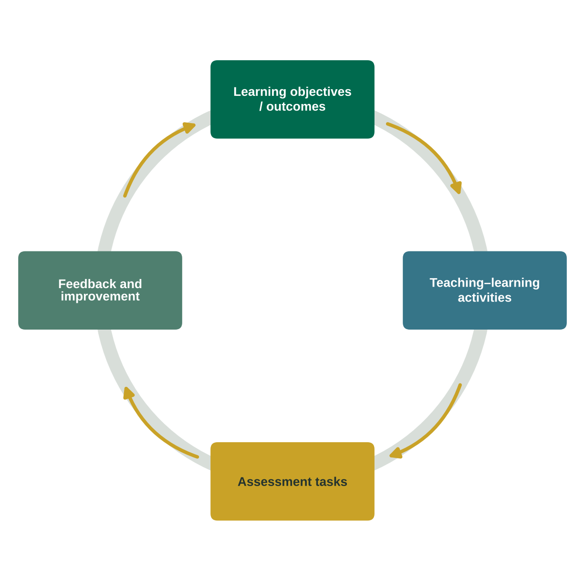
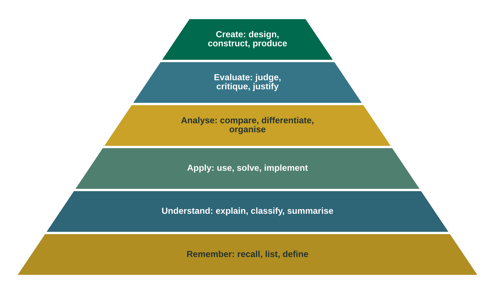
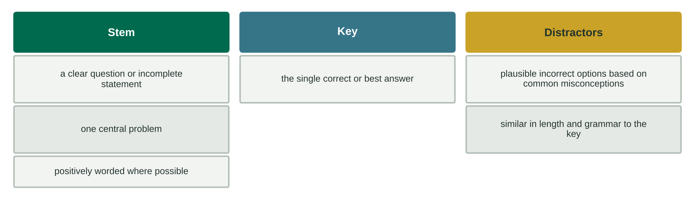
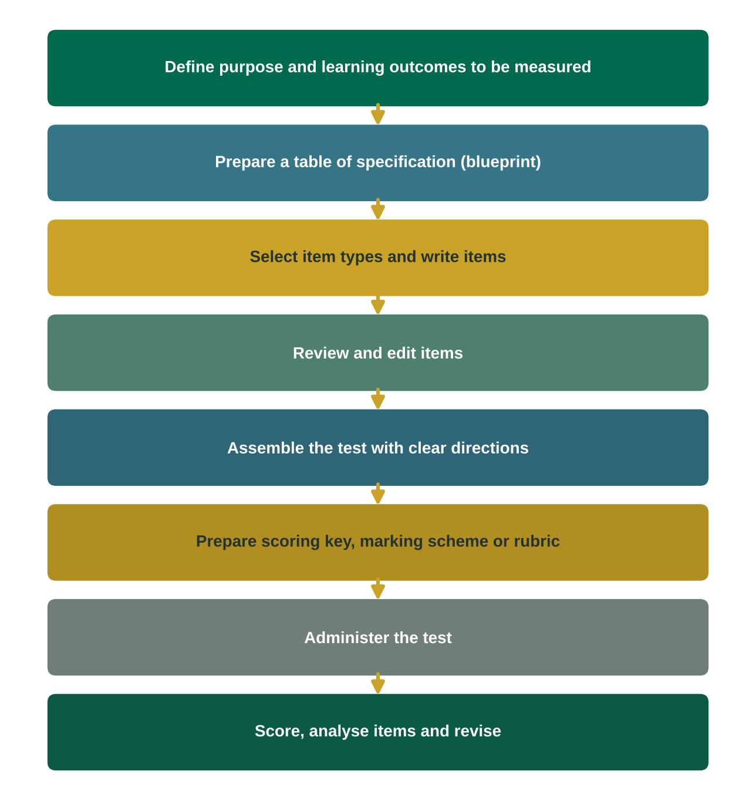
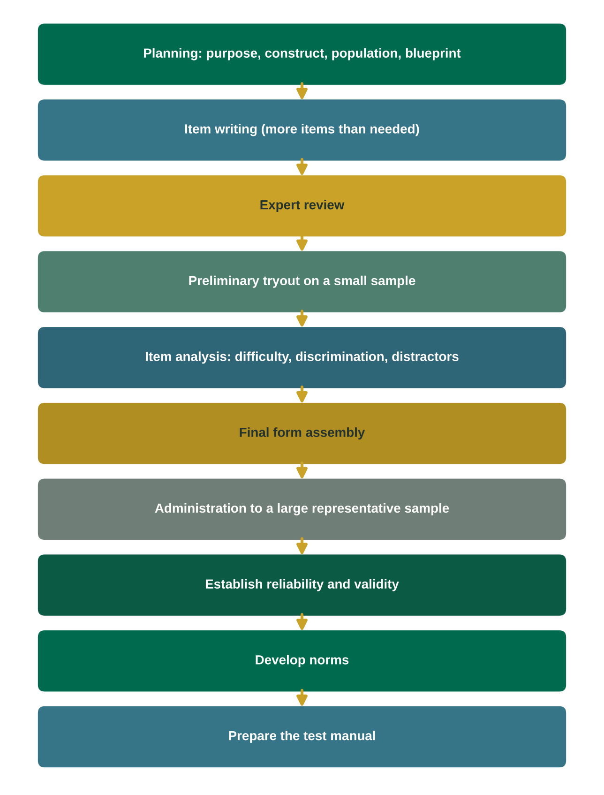
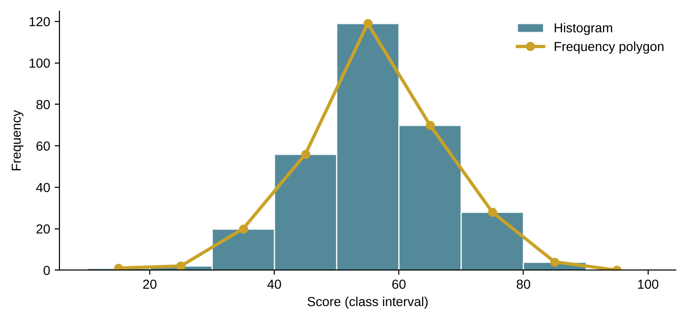
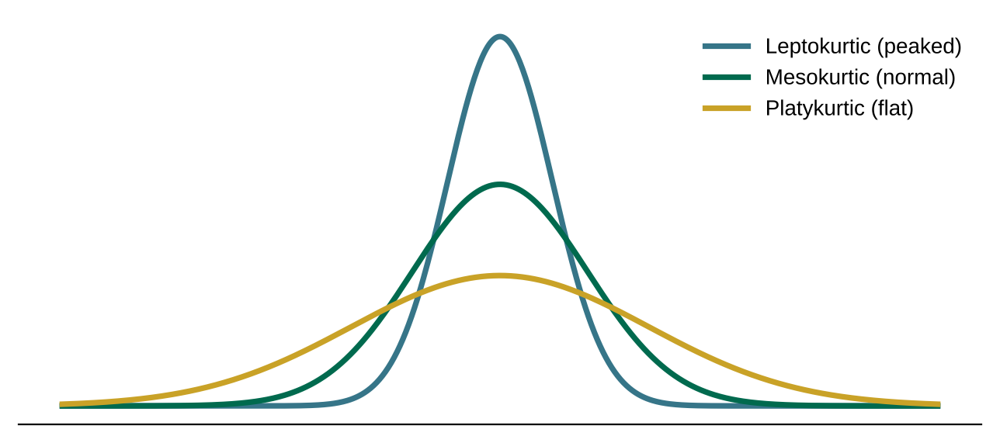

<!doctype html>
<html lang="en">
<head>
<meta charset="utf-8">
<meta name="viewport" content="width=device-width, initial-scale=1">
<title>PC 117 Introduction to Educational Assessment</title>
<meta name="description" content="Measurement, objectives, test construction, validity and reliability, item analysis, statistics and standard scores">
<link rel="icon" href="assets/favicon.svg" type="image/svg+xml">
<link rel="preconnect" href="https://fonts.googleapis.com">
<link rel="preconnect" href="https://fonts.gstatic.com" crossorigin>
<link rel="stylesheet" href="https://fonts.googleapis.com/css2?family=Fraunces:opsz,wght@9..144,400;9..144,500;9..144,600&family=Inter:wght@400;500;600;700&family=Noto+Serif+Bengali:wght@400;600&family=Source+Serif+4:ital,opsz,wght@0,8..60,400;0,8..60,600;1,8..60,400&display=swap">
<link rel="stylesheet" href="assets/style.css">
<script>try{var t=localStorage.getItem('theme');if(t)document.documentElement.dataset.theme=t}catch(e){}</script>
</head>
<body>
<a class="skip-link" href="#main">Skip to main content</a>
<header class="top">
  <button class="menu-btn" id="menuBtn" aria-label="Open course menu" aria-expanded="false">
    <svg viewBox="0 0 24 24" width="22" height="22" aria-hidden="true"><path d="M3 6h18M3 12h18M3 18h18" stroke="currentColor" stroke-width="2" stroke-linecap="round"/></svg>
  </button>
  <a class="brand" href="index.html"><span class="brand-mark" aria-hidden="true"><svg viewBox="0 0 32 32" width="30" height="30"><circle cx="16" cy="16" r="15" fill="none" stroke="currentColor" stroke-width="1.2"/><path d="M8 12.5 16 9l8 3.5-8 3.5z" fill="currentColor"/><path d="M11 14.2v4.3c0 1.6 2.2 2.9 5 2.9s5-1.3 5-2.9v-4.3" fill="none" stroke="currentColor" stroke-width="1.3"/></svg></span><span class="brand-text">Education <em>Study Notes</em></span></a>
  <div class="search" role="search">
    <input id="q" type="search" placeholder="Search all notes" autocomplete="off" aria-label="Search all notes">
    <div id="results" class="results" hidden></div>
  </div>
  <button class="theme-btn" id="themeBtn" aria-label="Switch light or dark mode">
    <svg viewBox="0 0 24 24" width="20" height="20" aria-hidden="true"><path d="M21 12.8A9 9 0 1 1 11.2 3a7 7 0 0 0 9.8 9.8z" fill="currentColor"/></svg>
  </button>
</header>
<div class="layout">
<nav class="side" id="side" aria-label="Courses">
<a class="side-home" href="index.html">Home</a>
<a class="side-home" href="practice.html">MCQ practice</a>
<div class="side-group"><div class="side-glabel">B.Ed (Hons) core courses</div><ul>
<li><a href="pc111.html"><span class="code">PC 111</span> Introduction to Education</a>
</li>
<li><a href="pc112.html"><span class="code">PC 112</span> Education in Bangladesh</a>
</li>
<li><a href="pc113.html"><span class="code">PC 113</span> Educational Psychology</a>
</li>
<li><a href="pc114.html"><span class="code">PC 114</span> Instructional Technology</a>
</li>
<li><a href="pc115.html"><span class="code">PC 115</span> Philosophical Foundation of Education</a>
</li>
<li><a href="pc116.html"><span class="code">PC 116</span> Sociological Foundation of Education</a>
</li>
<li class="current"><a href="pc117.html"><span class="code">PC 117</span> Introduction to Educational Assessment</a>
<ul class="side-toc">
<li><a href="#unit-1-basic-terms-and-concepts" data-toc="unit-1-basic-terms-and-concepts">Unit 1: Basic Terms and Concepts</a></li>
<li><a href="#unit-2-basis-of-assessment-learning-objectives-and-learning-outcomes" data-toc="unit-2-basis-of-assessment-learning-objectives-and-learning-outcomes">Unit 2: Basis of Assessment: Learning Objectives and Learning Outcomes</a></li>
<li><a href="#unit-3-methods-and-tools-of-assessment" data-toc="unit-3-methods-and-tools-of-assessment">Unit 3: Methods and Tools of Assessment</a></li>
<li><a href="#unit-4-test-construction-and-scoring" data-toc="unit-4-test-construction-and-scoring">Unit 4: Test Construction and Scoring</a></li>
<li><a href="#unit-5-qualities-of-a-good-test" data-toc="unit-5-qualities-of-a-good-test">Unit 5: Qualities of a Good Test</a></li>
<li><a href="#unit-6-standardisation-of-tests" data-toc="unit-6-standardisation-of-tests">Unit 6: Standardisation of Tests</a></li>
<li><a href="#unit-7-statistics-for-understanding-test-results" data-toc="unit-7-statistics-for-understanding-test-results">Unit 7: Statistics for Understanding Test Results</a></li>
<li><a href="#unit-8-standard-scores-and-norms" data-toc="unit-8-standard-scores-and-norms">Unit 8: Standard Scores and Norms</a></li>
<li><a href="#reading-list" data-toc="reading-list">Reading List</a></li>
<li><a href="#exam-preparation-bank" data-toc="exam-preparation-bank">Exam Preparation Bank</a></li>
<li><a href="#references" data-toc="references">References</a></li>
</ul>
</li>
<li><a href="pc118.html"><span class="code">PC 118</span> Organisation and Management of Educational Institutions</a>
</li>
<li><a href="pc119.html"><span class="code">PC 119</span> Education and Development</a>
</li>
<li><a href="pc120.html"><span class="code">PC 120</span> Introduction to Curriculum</a>
</li>
<li><a href="pc121.html"><span class="code">PC 121</span> Value Education</a>
</li>
<li><a href="pc122.html"><span class="code">PC 122</span> Gender Education</a>
</li>
<li><a href="pc123.html"><span class="code">PC 123</span> Environmental Education</a>
</li>
<li><a href="pc124.html"><span class="code">PC 124</span> Nonformal and Lifelong Education</a>
</li>
<li><a href="pc125.html"><span class="code">PC 125</span> Introduction to Educational Research</a>
</li>
<li><a href="pc126.html"><span class="code">PC 126</span> Statistics in Education</a>
</li>
<li><a href="pc127.html"><span class="code">PC 127</span> Inclusion in Education</a>
</li>
</ul></div>
<div class="side-group"><div class="side-glabel">M.Ed courses</div><ul>
<li><a href="ed501.html"><span class="code">ED 501</span> Education in Global Perspective</a>
</li>
<li><a href="ed502.html"><span class="code">ED 502</span> Policy, Strategy and Leadership in Education</a>
</li>
<li><a href="ed503.html"><span class="code">ED 503</span> Information and Communication Technology in Education</a>
</li>
<li><a href="ed504.html"><span class="code">ED 504</span> Methods and Techniques of Educational Research</a>
</li>
<li><a href="eer580.html"><span class="code">EER 580</span> Statistics in Educational Research</a>
</li>
<li><a href="eer581.html"><span class="code">EER 581</span> Research for Educational Changes</a>
</li>
<li><a href="eer582.html"><span class="code">EER 582</span> Assessment and Evaluation Techniques in Education</a>
</li>
<li><a href="eer583.html"><span class="code">EER 583</span> Practicing Educational Research</a>
</li>
</ul></div>
<div class="side-group"><div class="side-glabel">Open and Distance Learning</div><ul>
<li><a href="odl.html"><span class="code">ODL</span> Open and Distance Learning</a>
</li>
</ul></div>
<div class="side-group"><div class="side-glabel">Beyond the syllabus</div><ul>
<li><a href="trends-2026.html"><span class="code">Trends 2026</span> Education Today: News, Trends, Theories and Approaches Every Educator Should Know</a>
</li>
</ul></div>
</nav>
<div class="scrim" id="scrim"></div>
<main class="main" id="main" tabindex="-1">

<article class="course" data-course="pc117.html">
<header class="hero">
  <div class="kicker">B.ED (HONS) CORE COURSE · STUDENT STUDY NOTES</div>
  <h1 class="course-title"><span class="code-pill">PC 117</span> Introduction to Educational Assessment</h1>
  <p class="subtitle">Measurement, objectives, test construction, validity and reliability, item analysis, statistics and standard scores</p>
  <dl class="meta"><div><dt>Credit Hours</dt><dd>4</dd></div><div><dt>Units</dt><dd>8</dd></div><div><dt>Built On</dt><dd>Course syllabus; Linn &amp; Miller (2005), Gronlund &amp; Waugh (2009), Popham (2017), Nitko &amp; Brookhart (2014), Black &amp; Wiliam (1998), Anderson &amp; Krathwohl (2001)</dd></div></dl>
  <div class="hero-actions"><button type="button" class="btn tts-btn" data-tts="all" aria-label="Listen to all of these notes from the beginning"><span aria-hidden="true">▶</span> Listen to all notes</button><a class="btn ghost" href="pdf/pc117.pdf" download>Download PDF</a><a class="btn ghost" href="practice.html?course=pc117.html">Practise MCQs</a><a class="btn ghost" href="#reading-list">Reading list</a></div>
  <div class="progress"><div class="bar"><span id="pbar"></span></div><span id="ptext"></span></div>
</header>
<details class="toc" open><summary>Contents</summary><ol><li><a href="#unit-1-basic-terms-and-concepts">Unit 1: Basic Terms and Concepts</a><span class="tick" data-tick="unit-1-basic-terms-and-concepts"></span></li><li><a href="#unit-2-basis-of-assessment-learning-objectives-and-learning-outcomes">Unit 2: Basis of Assessment: Learning Objectives and Learning Outcomes</a><span class="tick" data-tick="unit-2-basis-of-assessment-learning-objectives-and-learning-outcomes"></span></li><li><a href="#unit-3-methods-and-tools-of-assessment">Unit 3: Methods and Tools of Assessment</a><span class="tick" data-tick="unit-3-methods-and-tools-of-assessment"></span></li><li><a href="#unit-4-test-construction-and-scoring">Unit 4: Test Construction and Scoring</a><span class="tick" data-tick="unit-4-test-construction-and-scoring"></span></li><li><a href="#unit-5-qualities-of-a-good-test">Unit 5: Qualities of a Good Test</a><span class="tick" data-tick="unit-5-qualities-of-a-good-test"></span></li><li><a href="#unit-6-standardisation-of-tests">Unit 6: Standardisation of Tests</a><span class="tick" data-tick="unit-6-standardisation-of-tests"></span></li><li><a href="#unit-7-statistics-for-understanding-test-results">Unit 7: Statistics for Understanding Test Results</a><span class="tick" data-tick="unit-7-statistics-for-understanding-test-results"></span></li><li><a href="#unit-8-standard-scores-and-norms">Unit 8: Standard Scores and Norms</a><span class="tick" data-tick="unit-8-standard-scores-and-norms"></span></li><li><a href="#reading-list">Reading List</a><span class="tick" data-tick="reading-list"></span></li><li><a href="#exam-preparation-bank">Exam Preparation Bank</a><span class="tick" data-tick="exam-preparation-bank"></span></li><li><a href="#references">References</a><span class="tick" data-tick="references"></span></li></ol></details>
<div class="prose">


<h3 id="about-this-course">About this course</h3>
<p>Assessment is where the curriculum becomes real for learners: what is
assessed is what students learn to value. This course builds the
vocabulary of test, measurement, assessment and evaluation; links
assessment to learning objectives through Bloom's taxonomy; teaches the
construction and scoring of essay, objective and creative (structured)
questions with tables of specification and rubrics; explains validity,
reliability and standardisation; and develops the statistics needed to
interpret results (central tendency, variability, the normal curve,
correlation, standard scores and percentiles). Worked examples are
included so that you can solve numerical questions in examinations.</p>
<h3 id="course-objectives">Course objectives</h3>
<ul>
<li><p>Define and relate test, measurement, assessment, evaluation and
examination, and explain assessment principles and purposes.</p></li>
<li><p>Write measurable learning objectives and outcomes aligned with
instruction and assessment.</p></li>
<li><p>Construct and score different types of test items, tables of
specification and rubrics.</p></li>
<li><p>Determine the validity, reliability and quality of tests, conduct
item analysis and interpret test statistics and standard
scores.</p></li>
</ul>


<div class="box box-howto"><div class="box-label">How To Use These Notes</div>
<p>Each unit follows the official syllabus order. Read the narrative
first, then the <strong>Key point</strong> boxes, then test yourself
with the <strong>Exam focus</strong> questions.</p>
<p>Golden boxes = must-remember ideas. Teal boxes = definitions and study tips. Green boxes = Bangladesh context.</p>
<p>The final chapter is a question bank (MCQs with answers, short and broad questions) in the style of university examinations, followed by full references in APA 7th style.</p>
<p>Statistics on enrolment, budgets and policies change every year. Before an exam, check the latest BANBEIS, DPE, UGC and UNESCO figures.</p></div>
<h1 id="unit-1-basic-terms-and-concepts">Unit 1: Basic Terms and
Concepts</h1><div aria-label="Tools for Unit 1: Basic Terms and Concepts" class="unit-tools" role="group"><button aria-label="Listen to Unit 1: Basic Terms and Concepts" class="tts-btn" data-target="unit-1-basic-terms-and-concepts" data-tts="unit" type="button"><span aria-hidden="true">▶</span> Listen to this chapter</button><button aria-label="Listen to the summary of Unit 1: Basic Terms and Concepts" class="tts-btn" data-target="sum-unit-1-basic-terms-and-concepts" data-tts="summary" type="button"><span aria-hidden="true">▶</span> Listen to summary</button><button class="done-btn" data-unit="unit-1-basic-terms-and-concepts" type="button">Mark as studied</button></div><details class="unit-summary" id="sum-unit-1-basic-terms-and-concepts"><summary>Chapter summary</summary><div class="sum-body"><p>Figure 1. The nested relationship of test, measurement, assessment and evaluation</p><p><strong>This chapter covers:</strong> Test, measurement, assessment, evaluation and examination; Curriculum, teaching–learning and assessment; Impact of assessment on practice ("washback"); Principles of assessment; The assessment process; Levels of measurement; Purposes and classification of assessment.</p><p><strong>Key points to remember:</strong></p><ul><li>A classic formula: Evaluation = Measurement (quantitative description) or Non-measurement (qualitative description) + Value judgement (Gronlund &amp; Linn).</li></ul></div></details><details class="curriculum" open=""><summary><span class="cur-label">What the curriculum says</span><span class="cur-unit">Unit 1: Basic Terms and Concepts · 4 contact hours</span></summary><div class="cur-h">Learning outcomes</div><p class="cur-lead">At the end of this unit learners will be able to</p><ol type="a"><li>explain concepts of basic terms of assessment</li><li>explain the purposes and significance of assessment</li><li>delineate the differences among test, examination, assessment and evaluation</li><li>describe the relationships among test, measurement, assessment and evaluation</li></ol><div class="cur-h">Content</div><ul><li>Definition and meaning of test, measurement, assessment, evaluation and examination</li><li>Differences and relationships among test, measurement, assessment, and evaluation</li><li>Curriculum, teaching-learning and assessment</li><li>Impact of assessment on educational practices (instructions and learning)</li><li>Principles of assessment</li><li>Assessment process- Steps involved in educational assessment</li><li>Levels of measurement</li><li>Purpose of assessment and its classification: assessment of learning/summative assessment, assessment for and as learning/formative assessment, assessment for inclusion</li></ul></details>
<h2 id="test-measurement-assessment-evaluation-and-examination">1.1
Test, measurement, assessment, evaluation and examination</h2>
<div class="table-wrap"><table>

<thead>
<tr class="header">
<th><strong>Term</strong></th>
<th><strong>Definition</strong></th>
<th><strong>Key feature</strong></th>
</tr>
<tr class="odd">
<th><strong>Test</strong></th>
<th>A systematic procedure or instrument for measuring a sample of
behaviour (Gronlund)</th>
<th>An instrument: a set of questions or tasks</th>
</tr>
<tr class="header">
<th><strong>Measurement</strong></th>
<th>"The assignment of numerals to objects or events according to rules"
(Stevens, 1946)</th>
<th>Quantitative: answers "how much?"</th>
</tr>
<tr class="odd">
<th><strong>Assessment</strong></th>
<th>The process of gathering, interpreting and using information about
learners' learning, through tests and other methods (observation,
portfolios, projects)</th>
<th>Broader than testing; can be quantitative or qualitative</th>
</tr>
<tr class="header">
<th><strong>Evaluation</strong></th>
<th>"The systematic process of determining the extent to which
instructional objectives are achieved" (Gronlund); a value judgement
about worth or merit</th>
<th>Judgement: answers "how good?"</th>
</tr>
<tr class="odd">
<th><strong>Examination</strong></th>
<th>A formal, usually summative assessment conducted under controlled
conditions, often public (e.g. SSC, HSC)</th>
<th>Formal, high-stakes, certification</th>
</tr>
</thead>
<tbody>
</tbody>
</table></div>
<div class="box box-key"><div class="box-label">Key Point</div>
<p>A classic formula: <strong>Evaluation = Measurement (quantitative
description) or Non-measurement (qualitative description) + Value
judgement</strong> (Gronlund &amp; Linn). Assessment includes
measurement and non-measurement information; evaluation adds the
judgement.</p></div>
<p></p>
<p><strong>Figure 1.</strong> <em>The nested relationship of test,
measurement, assessment and evaluation</em></p>
<h2 id="curriculum-teachinglearning-and-assessment">1.2 Curriculum,
teaching–learning and assessment</h2>
<p>Curriculum (what should be learned), instruction (how it is taught)
and assessment (how learning is checked) form a triangle that must be
<strong>constructively aligned</strong> (Biggs, 1996): objectives,
activities and assessment tasks must target the same outcomes. When
assessment is misaligned, for example testing recall when the curriculum
seeks problem solving, teaching and learning drift towards what is
tested.</p>
<p></p>
<p><strong>Figure 2.</strong> <em>Constructive alignment: curriculum,
instruction and assessment must target the same outcomes</em></p>
<h2 id="impact-of-assessment-on-practice-washback">1.3 Impact of
assessment on practice ("washback")</h2>
<p>Assessment has a powerful <strong>backwash</strong> or
<strong>washback</strong> effect on teaching and learning (Alderson
&amp; Wall, 1993). Positive washback occurs when examinations reward
understanding and skills; negative washback occurs when high-stakes
examinations encourage rote memorisation, guidebooks, coaching and
"teaching to the test", as widely observed with Bangladesh's public
examinations. Formative assessment research (Black &amp; Wiliam, 1998)
found effect sizes of 0.4–0.7 on achievement, among the largest of any
intervention.</p>
<h2 id="principles-of-assessment">1.4 Principles of assessment</h2>
<ol type="1">
<li><p><strong>Clarity of purpose:</strong> decide what is assessed and
why.</p></li>
<li><p><strong>Alignment</strong> with objectives and
instruction.</p></li>
<li><p><strong>Validity:</strong> measure what it intends to
measure.</p></li>
<li><p><strong>Reliability:</strong> produce consistent
results.</p></li>
<li><p><strong>Fairness and inclusiveness:</strong> free from bias;
accommodations for diverse learners.</p></li>
<li><p><strong>Variety:</strong> use multiple methods for a
comprehensive picture.</p></li>
<li><p><strong>Transparency:</strong> criteria known to learners in
advance.</p></li>
<li><p><strong>Practicality:</strong> feasible in time, cost and
effort.</p></li>
<li><p><strong>Feedback:</strong> timely, specific, actionable.</p></li>
<li><p><strong>Continuity:</strong> ongoing, not one-off.</p></li>
<li><p><strong>Ethics:</strong> confidentiality, honesty, avoiding
harm.</p></li>
</ol>
<h2 id="the-assessment-process">1.5 The assessment process</h2>
<p></p>
<p><strong>Figure 3.</strong> <em>Steps in educational
assessment</em></p>
<h2 id="levels-of-measurement">1.6 Levels of measurement</h2>
<div class="table-wrap"><table>

<thead>
<tr class="header">
<th><strong>Scale</strong></th>
<th><strong>Properties</strong></th>
<th><strong>Example</strong></th>
<th><strong>Permissible statistics</strong></th>
</tr>
<tr class="odd">
<th><strong>Nominal</strong></th>
<th>Categories only; no order</th>
<th>Gender, religion, roll number</th>
<th>Mode, frequency, chi-square</th>
</tr>
<tr class="header">
<th><strong>Ordinal</strong></th>
<th>Order, unequal intervals</th>
<th>Class rank, grades A/B/C, Likert ratings</th>
<th>Median, percentile, rank correlation</th>
</tr>
<tr class="odd">
<th><strong>Interval</strong></th>
<th>Order, equal intervals, no true zero</th>
<th>Temperature (°C), standardised test scores</th>
<th>Mean, SD, Pearson r</th>
</tr>
<tr class="header">
<th><strong>Ratio</strong></th>
<th>Order, equal intervals, true zero</th>
<th>Height, weight, time taken, number correct</th>
<th>All statistics, including ratios</th>
</tr>
</thead>
<tbody>
</tbody>
</table></div>
<h2 id="purposes-and-classification-of-assessment">1.7 Purposes and
classification of assessment</h2>
<div class="table-wrap"><table>

<thead>
<tr class="header">
<th><strong>Type</strong></th>
<th><strong>Purpose</strong></th>
<th><strong>Timing</strong></th>
<th><strong>Examples</strong></th>
</tr>
<tr class="odd">
<th><strong>Diagnostic</strong></th>
<th>Identify prior knowledge, strengths, learning difficulties</th>
<th>Before or during instruction</th>
<th>Pre-test, diagnostic interview</th>
</tr>
<tr class="header">
<th><strong>Formative: assessment for learning (AfL)</strong></th>
<th>Monitor progress and give feedback to improve learning</th>
<th>During instruction</th>
<th>Questioning, quizzes, exit tickets, peer feedback</th>
</tr>
<tr class="odd">
<th><strong>Assessment as learning (AaL)</strong></th>
<th>Students monitor and regulate their own learning
(metacognition)</th>
<th>Throughout</th>
<th>Self-assessment, learning journals, goal setting</th>
</tr>
<tr class="header">
<th><strong>Summative: assessment of learning (AoL)</strong></th>
<th>Judge and certify achievement</th>
<th>End of unit, term or course</th>
<th>Final examinations, SSC/HSC</th>
</tr>
<tr class="odd">
<th><strong>Placement</strong></th>
<th>Place learners in appropriate level or group</th>
<th>Before instruction</th>
<th>Admission tests</th>
</tr>
<tr class="header">
<th><strong>Assessment for inclusion</strong></th>
<th>Identify and remove barriers so all learners can participate and
show learning</th>
<th>Throughout</th>
<th>Universal design, accommodations, alternative formats</th>
</tr>
</thead>
<tbody>
</tbody>
</table></div>
<div class="box box-note"><div class="box-label">Note</div>
<p>"Assessment for inclusion" is a recent idea (Nieminen, 2022; Tai et
al., 2022) that asks whether assessment designs disadvantage some
learners (for example those with disabilities, or those learning in a
second language) and how to design assessments that let all students
demonstrate learning.</p></div>
<h1 id="unit-2-basis-of-assessment-learning-objectives-and-learning-outcomes">Unit
2: Basis of Assessment: Learning Objectives and Learning Outcomes</h1><div aria-label="Tools for Unit 2: Basis of Assessment: Learning Objectives and Learning Outcomes" class="unit-tools" role="group"><button aria-label="Listen to Unit 2: Basis of Assessment: Learning Objectives and Learning Outcomes" class="tts-btn" data-target="unit-2-basis-of-assessment-learning-objectives-and-learning-outcomes" data-tts="unit" type="button"><span aria-hidden="true">▶</span> Listen to this chapter</button><button aria-label="Listen to the summary of Unit 2: Basis of Assessment: Learning Objectives and Learning Outcomes" class="tts-btn" data-target="sum-unit-2-basis-of-assessment-learning-objectives-and-learning-outcomes" data-tts="summary" type="button"><span aria-hidden="true">▶</span> Listen to summary</button><button class="done-btn" data-unit="unit-2-basis-of-assessment-learning-objectives-and-learning-outcomes" type="button">Mark as studied</button></div><details class="unit-summary" id="sum-unit-2-basis-of-assessment-learning-objectives-and-learning-outcomes"><summary>Chapter summary</summary><div class="sum-body"><p>A learning objective states what learners should be able to do after instruction. Objectives guide the selection of content, methods and materials, communicate expectations to learners, and provide the basis for assessment.</p><p><strong>This chapter covers:</strong> Concept and importance of learning objectives; Bloom's taxonomy; Measurable (behavioural) objectives; Role of teacher and students; Relationships among objectives, instruction, outcomes and assessment.</p><p><strong>Key terms:</strong></p><ul><li>ABCD objective : A udience (Class VII students) will B ehaviour (solve two-step linear equations) under C ondition (without a calculator) to D egree (with at least 8 of 10 correct).</li></ul></div></details><details class="curriculum" open=""><summary><span class="cur-label">What the curriculum says</span><span class="cur-unit">Unit 2: Basis of Assessment: Learning Objectives and Learning Outcomes · 6 contact hours</span></summary><div class="cur-h">Learning outcomes</div><p class="cur-lead">At the end of this unit learners will be able to</p><ol type="a"><li>understanding and developing learning objectives and learning outcomes</li><li>explain the relationships among learning objectives, learning outcomes, instruction and assessment</li><li>use taxonomy of educational objectives in writing behavioral objectives</li></ol><div class="cur-h">Content</div><ul><li>Concept and importance of learning objectives; Bloom’s taxonomy of learning objectives</li><li>Assessable/measurable or behavioral learning objectives or learning outcomes</li><li>Writing learning objectives and learning outcomes</li><li>The role of teacher and students in determining and writing learning objectives and outcomes</li><li>Relationships among learning objectives, instruction, learning outcomes and assessment</li></ul></details>
<h2 id="concept-and-importance-of-learning-objectives">2.1 Concept and
importance of learning objectives</h2>
<p>A <strong>learning objective</strong> states what learners should be
able to do after instruction. Objectives guide the selection of content,
methods and materials, communicate expectations to learners, and provide
the basis for assessment. A <strong>learning outcome</strong> is a
statement of what the learner has actually achieved or is expected to
demonstrate, often written at the programme level. In practice, both are
written with observable verbs.</p>
<h2 id="blooms-taxonomy">2.2 Bloom's taxonomy</h2>
<p><strong>Cognitive domain.</strong> Bloom et al. (1956) proposed six
levels: Knowledge, Comprehension, Application, Analysis, Synthesis and
Evaluation. Anderson and Krathwohl (2001) revised it to verbs and
reordered the top two levels.</p>
<p></p>
<p><strong>Figure 4.</strong> <em>Revised Bloom's taxonomy of the
cognitive domain (Anderson &amp; Krathwohl, 2001), highest level at the
top</em></p>
<p>The revision also added a <strong>knowledge dimension</strong>:
factual, conceptual, procedural and metacognitive knowledge, creating a
two-dimensional taxonomy table.</p>
<p><strong>Affective domain</strong> (Krathwohl, Bloom &amp; Masia,
1964): receiving → responding → valuing → organisation →
characterisation by a value complex.</p>
<p><strong>Psychomotor domain</strong> (Dave, 1970): imitation →
manipulation → precision → articulation → naturalisation. Simpson (1972)
and Harrow (1972) offered alternative models.</p>
<h2 id="measurable-behavioural-objectives">2.3 Measurable (behavioural)
objectives</h2>
<p>Mager (1962) proposed three components: <strong>performance</strong>
(what the learner will do), <strong>conditions</strong> (under what
circumstances) and <strong>criterion</strong> (how well). The
<strong>ABCD</strong> format adds <strong>Audience</strong>.</p>
<div class="box box-def"><div class="box-label">Definition</div>
<p><strong>ABCD objective</strong>: <strong>A</strong>udience (Class VII
students) will <strong>B</strong>ehaviour (solve two-step linear
equations) under <strong>C</strong>ondition (without a calculator) to
<strong>D</strong>egree (with at least 8 of 10 correct).</p></div>
<p><strong>Avoid vague verbs</strong> such as "know", "understand",
"appreciate" and "learn" in specific objectives; use action verbs such
as "list", "explain", "calculate", "compare", "design" and "justify".
SMART objectives are Specific, Measurable, Achievable, Relevant and
Time-bound.</p>
<h2 id="role-of-teacher-and-students">2.4 Role of teacher and
students</h2>
<p>Teachers derive objectives from curriculum competencies and learner
needs, and share them in student-friendly language ("I can..."
statements). Students can co-construct success criteria, self-assess
against them and set personal goals, which is a core practice of
assessment for learning (Wiliam, 2011).</p>
<h2 id="relationships-among-objectives-instruction-outcomes-and-assessment">2.5
Relationships among objectives, instruction, outcomes and
assessment</h2>
<p>Objectives drive instruction; instruction produces learning outcomes;
assessment provides evidence of outcomes against objectives; and the
results feed back to revise objectives and instruction. This is the
logic of the <strong>Tyler rationale</strong> (1949) and constructive
alignment.</p>
<h1 id="unit-3-methods-and-tools-of-assessment">Unit 3: Methods and
Tools of Assessment</h1><div aria-label="Tools for Unit 3: Methods and Tools of Assessment" class="unit-tools" role="group"><button aria-label="Listen to Unit 3: Methods and Tools of Assessment" class="tts-btn" data-target="unit-3-methods-and-tools-of-assessment" data-tts="unit" type="button"><span aria-hidden="true">▶</span> Listen to this chapter</button><button aria-label="Listen to the summary of Unit 3: Methods and Tools of Assessment" class="tts-btn" data-target="sum-unit-3-methods-and-tools-of-assessment" data-tts="summary" type="button"><span aria-hidden="true">▶</span> Listen to summary</button><button class="done-btn" data-unit="unit-3-methods-and-tools-of-assessment" type="button">Mark as studied</button></div><details class="unit-summary" id="sum-unit-3-methods-and-tools-of-assessment"><summary>Chapter summary</summary><div class="sum-body"><p>Written tests require learners to respond in writing. Nature: economical for large groups, permanent record, standardised conditions.</p><p><strong>This chapter covers:</strong> Methods and tools; Test as an assessment tool; Written tests; Oral and performance tests; Norm-referenced and criterion-referenced tests; Inclusive assessment tools and strategies; Alternative assessment.</p></div></details><details class="curriculum" open=""><summary><span class="cur-label">What the curriculum says</span><span class="cur-unit">Unit 3: Methods and Tools of Assessment · 4 contact hours</span></summary><div class="cur-h">Learning outcomes</div><p class="cur-lead">At the end of this unit learners will be able to</p><ol type="a"><li>identify different tools of measurement and assessment</li><li>explain the use of different assessment tools</li><li>describe the steps required for test construction</li></ol><div class="cur-h">Content</div><ul><li>Different assessment methods and tools</li><li>Test as an assessment tool: concept and classification (written, oral, performance test; Teachermade and Standardized test)</li><li>Written test: definition, classification, nature and purposes</li><li>Oral and performance test: definition, nature and purposes</li><li>Norm referenced and Criterion referenced tests</li><li>Tools and strategies for inclusive assessment</li><li>Alternative assessment</li></ul></details>
<h2 id="methods-and-tools">3.1 Methods and tools</h2>
<p></p>
<p><strong>Figure 5.</strong> <em>Methods and tools of
assessment</em></p>
<h2 id="test-as-an-assessment-tool">3.2 Test as an assessment tool</h2>
<p><strong>Classification of tests:</strong></p>
<ul>
<li><p>By <strong>mode</strong>: written, oral, performance.</p></li>
<li><p>By <strong>construction</strong>: teacher-made and
standardised.</p></li>
<li><p>By <strong>interpretation</strong>: norm-referenced and
criterion-referenced.</p></li>
<li><p>By <strong>purpose</strong>: achievement, aptitude, diagnostic,
intelligence, personality.</p></li>
<li><p>By <strong>time</strong>: speed tests and power tests.</p></li>
<li><p>By <strong>format</strong>: essay (supply type, subjective) and
objective (selection type).</p></li>
</ul>
<h2 id="written-tests">3.3 Written tests</h2>
<p>Written tests require learners to respond in writing.
<strong>Nature:</strong> economical for large groups, permanent record,
standardised conditions. <strong>Purposes:</strong> measure knowledge,
understanding, application and higher-order thinking. Types: essay
(extended and restricted response), short answer, objective (MCQ,
true–false, matching, completion) and structured (creative)
questions.</p>
<h2 id="oral-and-performance-tests">3.4 Oral and performance tests</h2>
<ul>
<li><p><strong>Oral tests (viva voce):</strong> learners respond orally.
They assess communication, reasoning, depth of understanding and
language proficiency, and are useful for young children and learners
with writing difficulties. They are time-consuming and prone to examiner
subjectivity.</p></li>
<li><p><strong>Performance tests:</strong> learners perform a task or
create a product (laboratory experiment, speech, drawing, sports skill,
teaching practice). They assess skills in authentic contexts and are
scored with checklists, rating scales or rubrics.</p></li>
</ul>
<h2 id="norm-referenced-and-criterion-referenced-tests">3.5
Norm-referenced and criterion-referenced tests</h2>
<div class="table-wrap"><table>

<thead>
<tr class="header">
<th><strong>Basis</strong></th>
<th><strong>Norm-referenced test (NRT)</strong></th>
<th><strong>Criterion-referenced test (CRT)</strong></th>
</tr>
<tr class="odd">
<th><strong>Purpose</strong></th>
<th>Compare a learner's performance with others (a norm group)</th>
<th>Determine whether a learner has mastered specified criteria</th>
</tr>
<tr class="header">
<th><strong>Interpretation</strong></th>
<th>Percentile rank, standard scores, position</th>
<th>Percentage mastered, pass/fail against standard</th>
</tr>
<tr class="odd">
<th><strong>Content</strong></th>
<th>Broad, samples a wide domain</th>
<th>Narrow, well-defined domain</th>
</tr>
<tr class="header">
<th><strong>Item selection</strong></th>
<th>Items of moderate difficulty that discriminate</th>
<th>Items matched to objectives, regardless of difficulty</th>
</tr>
<tr class="odd">
<th><strong>Example</strong></th>
<th>Admission tests, IQ tests</th>
<th>Driving test, competency-based classroom tests, mastery tests</th>
</tr>
</thead>
<tbody>
</tbody>
</table></div>
<h2 id="inclusive-assessment-tools-and-strategies">3.6 Inclusive
assessment tools and strategies</h2>
<ul>
<li><p><strong>Accommodations</strong> that change how a learner
accesses or responds without changing what is assessed: extra time,
large print, Braille, a scribe, a reader, sign language interpretation,
a separate room, assistive technology.</p></li>
<li><p><strong>Modifications</strong> that change the content or
standard for learners with significant disabilities, guided by an
Individualised Education Plan (IEP).</p></li>
<li><p><strong>Universal Design for Assessment:</strong> clear language,
accessible formats, multiple ways to demonstrate learning.</p></li>
<li><p>In Bangladesh, public examinations allow extra time and a scribe
for visually impaired candidates, and the Persons with Disabilities
Rights and Protection Act 2013 supports such accommodations.</p></li>
</ul>
<h2 id="alternative-assessment">3.7 Alternative assessment</h2>
<p>Alternatives to traditional paper-and-pencil tests: <strong>authentic
assessment</strong> (real-world tasks; Wiggins, 1990),
<strong>performance assessment</strong>, <strong>portfolios</strong>
(purposeful collections of work showing growth),
<strong>projects</strong>, <strong>self and peer assessment</strong>,
<strong>concept maps</strong>, <strong>learning journals</strong>,
<strong>presentations</strong> and <strong>e-portfolios</strong>.
Strengths: assess higher-order and practical skills, promote engagement
and reflection. Limitations: time, scoring reliability, need for clear
rubrics.</p>
<h1 id="unit-4-test-construction-and-scoring">Unit 4: Test Construction
and Scoring</h1><div aria-label="Tools for Unit 4: Test Construction and Scoring" class="unit-tools" role="group"><button aria-label="Listen to Unit 4: Test Construction and Scoring" class="tts-btn" data-target="unit-4-test-construction-and-scoring" data-tts="unit" type="button"><span aria-hidden="true">▶</span> Listen to this chapter</button><button aria-label="Listen to the summary of Unit 4: Test Construction and Scoring" class="tts-btn" data-target="sum-unit-4-test-construction-and-scoring" data-tts="summary" type="button"><span aria-hidden="true">▶</span> Listen to summary</button><button class="done-btn" data-unit="unit-4-test-construction-and-scoring" type="button">Mark as studied</button></div><details class="unit-summary" id="sum-unit-4-test-construction-and-scoring"><summary>Chapter summary</summary><div class="sum-body"><p>Principles: use essays for higher-order outcomes; define the task clearly with specific directive verbs; indicate marks and time; avoid optional questions (they reduce comparability); prepare a model answer and scoring scheme in advance.</p><p><strong>This chapter covers:</strong> Essay-type tests; Objective-type tests; Structured / creative questions (CQ); Steps in constructing a teacher-made test; Table of specification; Rubrics.</p></div></details><details class="curriculum" open=""><summary><span class="cur-label">What the curriculum says</span><span class="cur-unit">Unit 4: Test Construction and Scoring · 9 contact hours</span></summary><div class="cur-h">Learning outcomes</div><p class="cur-lead">At the end of this unit learners will be able to</p><ol type="a"><li>develop different types of test items</li><li>prepare table of specification for constructing essay type test</li><li>construct assessment rubric for a particular test item</li></ol><div class="cur-h">Content</div><ul><li>Essay type test (short-answer, extended-answer): principles and practices, strengths and limitations</li><li>Objective type (MCQ, true-false, matching, rearranging, fill-in-the-gaps): principles and practices,</li></ul><div class="cur-sub">strengths and limitations</div><ul><li>Structured/creative question: principles and practices, strengths and limitations</li><li>Steps involved in test (teacher-made) construction</li><li>Table of specification: concept, importance and development process</li><li>Rubric as a tool for reliable marking; process of developing rubrics</li></ul></details>
<h2 id="essay-type-tests">4.1 Essay-type tests</h2>
<div class="table-wrap"><table>

<thead>
<tr class="header">
<th></th>
<th><strong>Restricted (short-answer) response</strong></th>
<th><strong>Extended response</strong></th>
</tr>
<tr class="odd">
<th><strong>Nature</strong></th>
<th>Limits content and form ("Give three reasons...")</th>
<th>Freedom to organise, integrate and express ideas ("Discuss...",
"Evaluate...")</th>
</tr>
<tr class="header">
<th><strong>Measures</strong></th>
<th>Understanding, application</th>
<th>Analysis, synthesis, evaluation, creativity, writing</th>
</tr>
</thead>
<tbody>
</tbody>
</table></div>
<p><strong>Principles:</strong> use essays for higher-order outcomes;
define the task clearly with specific directive verbs; indicate marks
and time; avoid optional questions (they reduce comparability); prepare
a model answer and scoring scheme in advance.</p>
<p><strong>Scoring:</strong> use an analytic rubric or point scheme;
score question by question across all scripts, not script by script;
score anonymously; ignore handwriting and irrelevant factors; use a
second marker for a sample.</p>
<p><strong>Strengths:</strong> assess higher-order thinking and
expression; easy to prepare; reduce guessing.</p>
<p><strong>Limitations:</strong> limited content sampling; subjective,
unreliable scoring (the "halo effect", examiner fatigue, order effects);
time-consuming to mark; bluffing.</p>
<h2 id="objective-type-tests">4.2 Objective-type tests</h2>
<div class="table-wrap"><table>

<thead>
<tr class="header">
<th><strong>Type</strong></th>
<th><strong>Principles of construction</strong></th>
<th><strong>Strengths</strong></th>
<th><strong>Limitations</strong></th>
</tr>
<tr class="odd">
<th><strong>Multiple-choice (MCQ)</strong></th>
<th>Clear stem stating one problem; one clearly best answer; 3–4
plausible distractors; avoid "all/none of the above", negatives (or bold
them), grammatical clues and length clues; randomise answer
positions</th>
<th>Wide content coverage, objective and fast scoring, can test
higher-order thinking, item analysis possible</th>
<th>Hard to write good distractors; guessing (25% with 4 options);
cannot measure expression or creativity</th>
</tr>
<tr class="header">
<th><strong>True–false (alternate response)</strong></th>
<th>One idea per statement; avoid specific determiners ("always",
"never"); roughly equal true and false; avoid textbook copying</th>
<th>Easy to construct and score; samples broadly</th>
<th>50% guessing; encourages trivia</th>
</tr>
<tr class="odd">
<th><strong>Matching</strong></th>
<th>Homogeneous premises and responses; more responses than premises;
short lists (5–10); clear directions</th>
<th>Efficient for associations</th>
<th>Limited to factual associations</th>
</tr>
<tr class="header">
<th><strong>Rearranging (sequencing)</strong></th>
<th>Clear basis for order; unambiguous sequence</th>
<th>Tests order, process, chronology</th>
<th>Partial credit is difficult</th>
</tr>
<tr class="odd">
<th><strong>Fill-in-the-gaps (completion)</strong></th>
<th>One blank per item, near the end; only key words omitted; specific
answers</th>
<th>Reduces guessing; easy to construct</th>
<th>Scoring ambiguity; mostly recall</th>
</tr>
</thead>
<tbody>
</tbody>
</table></div>
<p></p>
<p><strong>Figure 6.</strong> <em>Anatomy of a good multiple-choice
item</em></p>
<h2 id="structured-creative-questions-cq">4.3 Structured / creative
questions (CQ)</h2>
<p>Introduced in Bangladesh's SSC examinations from 2008 (and HSC from
2010), the <strong>creative question</strong> (<em>srijonshil
prosno</em>) presents a <strong>stimulus</strong> (a passage, picture,
graph or scenario) followed by four sub-questions at increasing
cognitive levels:</p>
<div class="table-wrap"><table>

<thead>
<tr class="header">
<th><strong>Part</strong></th>
<th><strong>Cognitive level</strong></th>
<th><strong>Marks</strong></th>
<th><strong>Example verb</strong></th>
</tr>
<tr class="odd">
<th><strong>(a)</strong></th>
<th>Knowledge</th>
<th>1</th>
<th>What, define, name</th>
</tr>
<tr class="header">
<th><strong>(b)</strong></th>
<th>Comprehension</th>
<th>2</th>
<th>Explain, why</th>
</tr>
<tr class="odd">
<th><strong>(c)</strong></th>
<th>Application</th>
<th>3</th>
<th>Apply, calculate, show how</th>
</tr>
<tr class="header">
<th><strong>(d)</strong></th>
<th>Higher ability (analysis, synthesis, evaluation)</th>
<th>4</th>
<th>Evaluate, analyse, compare, justify</th>
</tr>
</thead>
<tbody>
</tbody>
</table></div>
<p><strong>Strengths:</strong> reduces memorisation, tests multiple
levels, uses unseen stimuli. <strong>Limitations:</strong> many teachers
lack training to write good stimuli, so guidebooks and coaching filled
the gap (Education Watch and other studies documented this); stimuli are
often copied; scoring of level (d) varies widely.</p>
<h2 id="steps-in-constructing-a-teacher-made-test">4.4 Steps in
constructing a teacher-made test</h2>
<p></p>
<p><strong>Figure 7.</strong> <em>Steps in constructing a teacher-made
test</em></p>
<h2 id="table-of-specification">4.5 Table of specification</h2>
<p>A <strong>table of specification (TOS)</strong> or <strong>test
blueprint</strong> is a two-way chart that relates content areas to
cognitive levels (objectives) and allocates the number of items or marks
to each cell according to the instructional emphasis. It is the main
tool for ensuring <strong>content validity</strong>.</p>
<p><strong>Development process:</strong> (1) list content areas and the
time or weight spent on each; (2) list cognitive levels; (3) decide
total marks; (4) distribute marks across content in proportion to
weight; (5) distribute each content's marks across levels; (6) decide
item types for each cell.</p>
<div class="table-wrap"><table>

<thead>
<tr class="header">
<th><strong>Content (weight)</strong></th>
<th><strong>Remember</strong></th>
<th><strong>Understand</strong></th>
<th><strong>Apply</strong></th>
<th><strong>Analyse/Evaluate</strong></th>
<th><strong>Total</strong></th>
</tr>
<tr class="odd">
<th><strong>Photosynthesis (40%)</strong></th>
<th>4</th>
<th>4</th>
<th>4</th>
<th>4</th>
<th>16</th>
</tr>
<tr class="header">
<th><strong>Respiration (30%)</strong></th>
<th>3</th>
<th>3</th>
<th>3</th>
<th>3</th>
<th>12</th>
</tr>
<tr class="odd">
<th><strong>Transpiration (30%)</strong></th>
<th>3</th>
<th>3</th>
<th>3</th>
<th>3</th>
<th>12</th>
</tr>
<tr class="header">
<th><strong>Total</strong></th>
<th><strong>10 (25%)</strong></th>
<th><strong>10 (25%)</strong></th>
<th><strong>10 (25%)</strong></th>
<th><strong>10 (25%)</strong></th>
<th><strong>40</strong></th>
</tr>
</thead>
<tbody>
</tbody>
</table></div>
<h2 id="rubrics">4.6 Rubrics</h2>
<p>A <strong>rubric</strong> is a scoring guide that lists criteria for
a task and describes levels of performance for each criterion
(Brookhart, 2013).</p>
<ul>
<li><p><strong>Analytic rubric:</strong> separate scores for each
criterion, giving detailed feedback.</p></li>
<li><p><strong>Holistic rubric:</strong> a single overall score based on
a general impression, which is faster.</p></li>
<li><p><strong>Process of developing a rubric:</strong> identify the
learning outcomes; select criteria (3–6); decide performance levels
(typically 3–5); write clear descriptors for each level; pilot with
sample work; revise; share with students in advance.</p></li>
</ul>
<div class="table-wrap"><table>

<thead>
<tr class="header">
<th><strong>Criterion</strong></th>
<th><strong>Excellent (4)</strong></th>
<th><strong>Good (3)</strong></th>
<th><strong>Developing (2)</strong></th>
<th><strong>Beginning (1)</strong></th>
</tr>
<tr class="odd">
<th><strong>Content accuracy</strong></th>
<th>All facts accurate and complete</th>
<th>Minor errors</th>
<th>Several errors</th>
<th>Mostly inaccurate</th>
</tr>
<tr class="header">
<th><strong>Organisation</strong></th>
<th>Logical, clear structure</th>
<th>Mostly logical</th>
<th>Some disorganisation</th>
<th>No clear structure</th>
</tr>
<tr class="odd">
<th><strong>Use of evidence</strong></th>
<th>Strong, relevant examples</th>
<th>Adequate examples</th>
<th>Few examples</th>
<th>No evidence</th>
</tr>
<tr class="header">
<th><strong>Language</strong></th>
<th>Clear, correct, fluent</th>
<th>Few errors</th>
<th>Errors affect clarity</th>
<th>Errors impede meaning</th>
</tr>
</thead>
<tbody>
</tbody>
</table></div>
<h1 id="unit-5-qualities-of-a-good-test">Unit 5: Qualities of a Good
Test</h1><div aria-label="Tools for Unit 5: Qualities of a Good Test" class="unit-tools" role="group"><button aria-label="Listen to Unit 5: Qualities of a Good Test" class="tts-btn" data-target="unit-5-qualities-of-a-good-test" data-tts="unit" type="button"><span aria-hidden="true">▶</span> Listen to this chapter</button><button aria-label="Listen to the summary of Unit 5: Qualities of a Good Test" class="tts-btn" data-target="sum-unit-5-qualities-of-a-good-test" data-tts="summary" type="button"><span aria-hidden="true">▶</span> Listen to summary</button><button class="done-btn" data-unit="unit-5-qualities-of-a-good-test" type="button">Mark as studied</button></div><details class="unit-summary" id="sum-unit-5-qualities-of-a-good-test"><summary>Chapter summary</summary><div class="sum-body"><p>Validity, reliability, objectivity, usability (practicability), discrimination, comprehensiveness, adequacy, fairness and the existence of norms.</p><p><strong>This chapter covers:</strong> Characteristics of a good test; Validity; Reliability; Objectivity and usability; Test norms and standardisation.</p><p><strong>Key terms:</strong></p><ul><li>Validity : "The degree to which evidence and theory support the interpretations of test scores for proposed uses of tests" (AERA, APA &amp; NCME, 2014).</li><li>Reliability : The consistency, stability or dependability of test scores across occasions, forms, items or raters.</li></ul></div></details><details class="curriculum" open=""><summary><span class="cur-label">What the curriculum says</span><span class="cur-unit">Unit 5: Qualities of a Good Test · 4 contact hours</span></summary><div class="cur-h">Learning outcomes</div><p class="cur-lead">At the end of this unit learners will be able to</p><ol type="a"><li>explain the characteristics of a good test in educational setting</li><li>analyze test in terms of the characteristics</li></ol><div class="cur-h">Content</div><ul><li>Concept and characteristics of good/effective tests</li><li>Validity: concept, types, significance, factors that affect and enhance validity, ways of determining</li></ul><div class="cur-sub">validity of a test</div><ul><li>Reliability: concept, types, significance, factors that affect and enhance reliability, methods of</li></ul><div class="cur-sub">determining reliability of a test</div><ul><li>Objectivity and applicability/usability</li><li>Test norms and standardization</li></ul></details>
<h2 id="characteristics-of-a-good-test">5.1 Characteristics of a good
test</h2>
<p>Validity, reliability, objectivity, usability (practicability),
discrimination, comprehensiveness, adequacy, fairness and the existence
of norms.</p>
<h2 id="validity">5.2 Validity</h2>
<div class="box box-def"><div class="box-label">Definition</div>
<p><strong>Validity</strong>: "The degree to which evidence and theory
support the interpretations of test scores for proposed uses of tests"
(AERA, APA &amp; NCME, 2014). In simple terms, a test is valid if it
measures what it is supposed to measure.</p></div>
<div class="table-wrap"><table>

<thead>
<tr class="header">
<th><strong>Type</strong></th>
<th><strong>Question it answers</strong></th>
<th><strong>How it is established</strong></th>
</tr>
<tr class="odd">
<th><strong>Content validity</strong></th>
<th>Does the test adequately sample the content and objectives?</th>
<th>Table of specification; expert judgement</th>
</tr>
<tr class="header">
<th><strong>Face validity</strong></th>
<th>Does it look appropriate to test-takers?</th>
<th>Superficial judgement (not a technical form of validity)</th>
</tr>
<tr class="odd">
<th><strong>Criterion-related: concurrent</strong></th>
<th>Does it correlate with a current criterion?</th>
<th>Correlate with an established test given at the same time</th>
</tr>
<tr class="header">
<th><strong>Criterion-related: predictive</strong></th>
<th>Does it predict future performance?</th>
<th>Correlate with later criterion (e.g. admission test with first-year
GPA)</th>
</tr>
<tr class="odd">
<th><strong>Construct validity</strong></th>
<th>Does it measure the theoretical construct (e.g. intelligence,
anxiety)?</th>
<th>Factor analysis; convergent and discriminant evidence</th>
</tr>
<tr class="header">
<th><strong>Consequential validity (Messick, 1989)</strong></th>
<th>What are the intended and unintended consequences of using the
test?</th>
<th>Studies of impact and washback</th>
</tr>
</thead>
<tbody>
</tbody>
</table></div>
<p><strong>Factors that reduce validity:</strong> unclear directions;
difficult vocabulary; ambiguous items; inappropriate difficulty; poor
sampling of content; identifiable answer patterns; cheating; too little
time; test anxiety; unreliable scoring.</p>
<p><strong>Ways to enhance validity:</strong> align with objectives
through a TOS; clear instructions; appropriate item difficulty; adequate
length; secure administration; objective scoring.</p>
<h2 id="reliability">5.3 Reliability</h2>
<div class="box box-def"><div class="box-label">Definition</div>
<p><strong>Reliability</strong>: The consistency, stability or
dependability of test scores across occasions, forms, items or raters. A
reliable test gives similar results under consistent
conditions.</p></div>
<div class="table-wrap"><table>

<thead>
<tr class="header">
<th><strong>Method</strong></th>
<th><strong>Type of consistency</strong></th>
<th><strong>Procedure</strong></th>
</tr>
<tr class="odd">
<th><strong>Test–retest</strong></th>
<th>Stability over time</th>
<th>Give the same test twice to the same group; correlate scores</th>
</tr>
<tr class="header">
<th><strong>Parallel (equivalent) forms</strong></th>
<th>Equivalence</th>
<th>Give two equivalent forms; correlate</th>
</tr>
<tr class="odd">
<th><strong>Split-half</strong></th>
<th>Internal consistency</th>
<th>Split the test into halves (e.g. odd–even), correlate, then correct
with <strong>Spearman–Brown</strong>: r_full = 2r_half ÷ (1 +
r_half)</th>
</tr>
<tr class="header">
<th><strong>Kuder–Richardson (KR-20, KR-21)</strong></th>
<th>Internal consistency for dichotomously scored items</th>
<th>KR-20 = [k ÷ (k−1)] × [1 − Σpq ÷ σ²]</th>
</tr>
<tr class="odd">
<th><strong>Cronbach's alpha</strong></th>
<th>Internal consistency for any item scoring</th>
<th>α = [k ÷ (k−1)] × [1 − Σσ²_i ÷ σ²_X]</th>
</tr>
<tr class="header">
<th><strong>Inter-rater (scorer) reliability</strong></th>
<th>Agreement between scorers</th>
<th>Correlation or Cohen's kappa between two raters</th>
</tr>
</thead>
<tbody>
</tbody>
</table></div>
<div class="box box-exam"><div class="box-label">Exam Focus</div>
<p>Worked example: the odd–even halves of a test correlate at r = 0.60.
Full-test reliability = 2(0.60) ÷ (1 + 0.60) = 1.20 ÷ 1.60 =
<strong>0.75</strong>.</p></div>
<p><strong>Factors affecting reliability:</strong> test length (longer
tests are more reliable); group heterogeneity (more variability gives
higher reliability); item quality and difficulty; objectivity of
scoring; testing conditions; time interval (for test–retest);
guessing.</p>
<p><strong>Relationship:</strong> reliability is necessary but not
sufficient for validity. A test can be reliable but not valid (a
bathroom scale that is consistently 2 kg wrong), but it cannot be valid
without being reliable.</p>
<p></p>
<p><strong>Figure 8.</strong> <em>The target analogy for reliability and
validity</em></p>
<h2 id="objectivity-and-usability">5.4 Objectivity and usability</h2>
<ul>
<li><p><strong>Objectivity:</strong> the degree to which equally
competent scorers obtain the same results; ensured by clear keys and
rubrics.</p></li>
<li><p><strong>Usability (practicability):</strong> ease of
administration, scoring and interpretation; reasonable time and cost;
availability of equivalent forms.</p></li>
</ul>
<h2 id="test-norms-and-standardisation">5.5 Test norms and
standardisation</h2>
<p><strong>Norms</strong> are statistics that describe the performance
of a defined reference group (the norm group), such as age norms, grade
norms, percentile norms and standard-score norms.
<strong>Standardisation</strong> means that a test has uniform
procedures for administration and scoring, and that its norms are
established on a representative sample.</p>
<h1 id="unit-6-standardisation-of-tests">Unit 6: Standardisation of
Tests</h1><div aria-label="Tools for Unit 6: Standardisation of Tests" class="unit-tools" role="group"><button aria-label="Listen to Unit 6: Standardisation of Tests" class="tts-btn" data-target="unit-6-standardisation-of-tests" data-tts="unit" type="button"><span aria-hidden="true">▶</span> Listen to this chapter</button><button aria-label="Listen to the summary of Unit 6: Standardisation of Tests" class="tts-btn" data-target="sum-unit-6-standardisation-of-tests" data-tts="summary" type="button"><span aria-hidden="true">▶</span> Listen to summary</button><button class="done-btn" data-unit="unit-6-standardisation-of-tests" type="button">Mark as studied</button></div><details class="unit-summary" id="sum-unit-6-standardisation-of-tests"><summary>Chapter summary</summary><div class="sum-body"><p>A standardised test is constructed by experts, tried out on a representative sample, and has established validity, reliability and norms, with uniform procedures for administration, scoring and interpretation. Examples: the Stanford–Binet, Wechsler scales, SAT, TOEFL and IELTS.</p><p><strong>This chapter covers:</strong> Concept of standardised tests; Teacher-made versus standardised tests; Steps in test standardisation; Item analysis; Principles of test administration.</p></div></details><details class="curriculum" open=""><summary><span class="cur-label">What the curriculum says</span><span class="cur-unit">Unit 6: Standardization of Test · 4 contact hours</span></summary><div class="cur-h">Learning outcomes</div><p class="cur-lead">At the end of this unit learners will be able to</p><ol type="a"><li>identify the differences between standardized test and teacher-made test</li><li>develop a standardized educational test following the specific steps</li></ol><div class="cur-h">Content</div><ul><li>Concept of standardized tests</li><li>Difference between teacher-made tests and standardized tests</li><li>Steps involved in test standardization</li><li>Item analysis: difficulty index, discriminating index, effectiveness of item distracters</li><li>Principles of test administration</li></ul></details>
<h2 id="concept-of-standardised-tests">6.1 Concept of standardised
tests</h2>
<p>A <strong>standardised test</strong> is constructed by experts, tried
out on a representative sample, and has established validity,
reliability and norms, with uniform procedures for administration,
scoring and interpretation. Examples: the Stanford–Binet, Wechsler
scales, SAT, TOEFL and IELTS.</p>
<h2 id="teacher-made-versus-standardised-tests">6.2 Teacher-made versus
standardised tests</h2>
<div class="table-wrap"><table>

<thead>
<tr class="header">
<th><strong>Basis</strong></th>
<th><strong>Teacher-made test</strong></th>
<th><strong>Standardised test</strong></th>
</tr>
<tr class="odd">
<th><strong>Constructed by</strong></th>
<th>Classroom teacher</th>
<th>Test experts and specialists</th>
</tr>
<tr class="header">
<th><strong>Purpose</strong></th>
<th>Measure learning in a specific class or unit</th>
<th>Compare performance across schools, regions, nations</th>
</tr>
<tr class="odd">
<th><strong>Content</strong></th>
<th>Local curriculum, specific instruction</th>
<th>Broad, common content</th>
</tr>
<tr class="header">
<th><strong>Item analysis and tryout</strong></th>
<th>Rarely</th>
<th>Extensive</th>
</tr>
<tr class="odd">
<th><strong>Reliability and validity</strong></th>
<th>Usually not established</th>
<th>Established and reported</th>
</tr>
<tr class="header">
<th><strong>Norms</strong></th>
<th>None</th>
<th>Established on representative samples</th>
</tr>
<tr class="odd">
<th><strong>Administration and scoring</strong></th>
<th>Flexible</th>
<th>Uniform, fixed</th>
</tr>
<tr class="header">
<th><strong>Cost</strong></th>
<th>Low</th>
<th>High</th>
</tr>
</thead>
<tbody>
</tbody>
</table></div>
<h2 id="steps-in-test-standardisation">6.3 Steps in test
standardisation</h2>
<p></p>
<p><strong>Figure 9.</strong> <em>Steps in standardising a test</em></p>
<h2 id="item-analysis">6.4 Item analysis</h2>
<p>Item analysis evaluates the quality of each item using students'
responses. The common procedure: arrange papers by total score, take the
<strong>upper 27%</strong> and <strong>lower 27%</strong> groups
(Kelley, 1939), and count correct responses in each.</p>
<p><strong>Difficulty index (p):</strong> proportion of students
answering correctly.</p>
<p>p = (R_U + R_L) ÷ (N_U + N_L), where R = number right in each group
and N = number in each group.</p>
<p>Interpretation: p &gt; 0.80 easy; 0.30–0.80 moderate (desirable,
ideally around 0.50 for NRTs); p &lt; 0.30 difficult.</p>
<p><strong>Discrimination index (D):</strong> how well the item
distinguishes high from low achievers.</p>
<p>D = (R_U − R_L) ÷ N_group.</p>
<p>Interpretation (Ebel, 1979): D ≥ 0.40 very good; 0.30–0.39 reasonably
good; 0.20–0.29 marginal (revise); &lt; 0.20 poor (reject or revise);
negative D indicates a faulty item (more low achievers answered it
correctly).</p>
<p><strong>Distractor effectiveness:</strong> a good distractor attracts
more students from the lower group than the upper group, and is chosen
by at least about 5% of examinees. A distractor that nobody chooses is
non-functional.</p>
<div class="box box-exam"><div class="box-label">Exam Focus</div>
<p>Worked example: 30 students in each of the upper and lower groups. On
Item 7, 24 in the upper group and 12 in the lower group answered
correctly. p = (24 + 12) ÷ 60 = <strong>0.60</strong> (moderate). D =
(24 − 12) ÷ 30 = <strong>0.40</strong> (very good). Keep the
item.</p></div>
<div class="table-wrap"><table>

<thead>
<tr class="header">
<th><strong>Option</strong></th>
<th><strong>A</strong></th>
<th><strong>B* (key)</strong></th>
<th><strong>C</strong></th>
<th><strong>D</strong></th>
</tr>
<tr class="odd">
<th><strong>Upper group (n = 30)</strong></th>
<th>2</th>
<th>24</th>
<th>3</th>
<th>1</th>
</tr>
<tr class="header">
<th><strong>Lower group (n = 30)</strong></th>
<th>7</th>
<th>12</th>
<th>8</th>
<th>3</th>
</tr>
<tr class="odd">
<th><strong>Interpretation</strong></th>
<th>Functioning</th>
<th>Good item</th>
<th>Functioning</th>
<th>Weak distractor (few choose it)</th>
</tr>
</thead>
<tbody>
</tbody>
</table></div>
<h2 id="principles-of-test-administration">6.5 Principles of test
administration</h2>
<p>Prepare the physical environment (light, seating, quiet); follow
standard instructions and timing exactly; ensure test security;
establish rapport and reduce anxiety; provide accommodations; avoid
giving hints; monitor actively to prevent malpractice; record
irregularities; collect materials systematically.</p>
<h1 id="unit-7-statistics-for-understanding-test-results">Unit 7:
Statistics for Understanding Test Results</h1><div aria-label="Tools for Unit 7: Statistics for Understanding Test Results" class="unit-tools" role="group"><button aria-label="Listen to Unit 7: Statistics for Understanding Test Results" class="tts-btn" data-target="unit-7-statistics-for-understanding-test-results" data-tts="unit" type="button"><span aria-hidden="true">▶</span> Listen to this chapter</button><button aria-label="Listen to the summary of Unit 7: Statistics for Understanding Test Results" class="tts-btn" data-target="sum-unit-7-statistics-for-understanding-test-results" data-tts="summary" type="button"><span aria-hidden="true">▶</span> Listen to summary</button><button class="done-btn" data-unit="unit-7-statistics-for-understanding-test-results" type="button">Mark as studied</button></div><details class="unit-summary" id="sum-unit-7-statistics-for-understanding-test-results"><summary>Chapter summary</summary><div class="sum-body"><p>Statistics organise, summarise and interpret test data so that teachers can describe class performance, compare groups, diagnose weaknesses and evaluate instruction. Descriptive statistics summarise data; inferential statistics generalise from samples to populations (see PC 126).</p><p><strong>This chapter covers:</strong> Statistics in educational data analysis; Frequency distribution and graphs; Measures of central tendency; Measures of variability; Shape of distribution: skewness and kurtosis; The normal probability curve (NPC); Correlation.</p></div></details><details class="curriculum" open=""><summary><span class="cur-label">What the curriculum says</span><span class="cur-unit">Unit 7: Statistics for Understanding Test Results · 6 contact hours</span></summary><div class="cur-h">Learning outcomes</div><p class="cur-lead">At the end of this unit learners will be able to</p><ol type="a"><li>present assessment results in tabular and graphical form</li><li>use central tendency and dispersion to analyze students’ achieved score and performance</li><li>compute relationships between two or more variable of students</li></ol><div class="cur-h">Content</div><ul><li>Statistics in educational data analysis</li><li>Scales of measurement: nominal, ordinal, interval and ratio</li><li>Summarization and description of test scores: the frequency distribution; graphical methods: histogram, frequency polygon, frequency curve, bar diagram, pie chart</li><li>Centre of a set of scores and its measure: Mean, Median and Mode</li><li>Variability of test scores and its measures: Range, Interquartile range, Variance and Standard</li></ul><div class="cur-sub">Deviation</div><ul><li>Shape of distribution: Skewness (Symmetric and asymmetric shapes) and Kurtosis</li><li>The Normal Probability Curve</li><li>Statistical relationship: Correlation between two or more variables</li></ul></details>
<h2 id="statistics-in-educational-data-analysis">7.1 Statistics in
educational data analysis</h2>
<p>Statistics organise, summarise and interpret test data so that
teachers can describe class performance, compare groups, diagnose
weaknesses and evaluate instruction. <strong>Descriptive
statistics</strong> summarise data; <strong>inferential
statistics</strong> generalise from samples to populations (see PC
126).</p>
<h2 id="frequency-distribution-and-graphs">7.2 Frequency distribution
and graphs</h2>
<p>A <strong>frequency distribution</strong> groups scores into class
intervals and counts how many fall in each.</p>
<div class="table-wrap"><table style="width:100%;">

<thead>
<tr class="header">
<th><strong>Class interval</strong></th>
<th><strong>Tally / Frequency (f)</strong></th>
<th><strong>Midpoint (x)</strong></th>
<th><strong>Cumulative frequency (cf)</strong></th>
</tr>
<tr class="odd">
<th><strong>90–99</strong></th>
<th>2</th>
<th>94.5</th>
<th>50</th>
</tr>
<tr class="header">
<th><strong>80–89</strong></th>
<th>5</th>
<th>84.5</th>
<th>48</th>
</tr>
<tr class="odd">
<th><strong>70–79</strong></th>
<th>9</th>
<th>74.5</th>
<th>43</th>
</tr>
<tr class="header">
<th><strong>60–69</strong></th>
<th>13</th>
<th>64.5</th>
<th>34</th>
</tr>
<tr class="odd">
<th><strong>50–59</strong></th>
<th>10</th>
<th>54.5</th>
<th>21</th>
</tr>
<tr class="header">
<th><strong>40–49</strong></th>
<th>7</th>
<th>44.5</th>
<th>11</th>
</tr>
<tr class="odd">
<th><strong>30–39</strong></th>
<th>4</th>
<th>34.5</th>
<th>4</th>
</tr>
<tr class="header">
<th><strong>Total</strong></th>
<th><strong>N = 50</strong></th>
<th></th>
<th></th>
</tr>
</thead>
<tbody>
</tbody>
</table></div>
<p></p>
<p><strong>Figure 10.</strong> <em>A histogram with its frequency
polygon (illustrative test scores)</em></p>
<ul>
<li><p><strong>Histogram:</strong> adjacent bars for continuous class
intervals.</p></li>
<li><p><strong>Frequency polygon:</strong> points at the midpoints
joined by straight lines.</p></li>
<li><p><strong>Frequency curve (smoothed polygon)</strong> shows the
shape of the distribution.</p></li>
<li><p><strong>Bar diagram:</strong> separated bars for categorical data
(e.g. pass rates by school).</p></li>
<li><p><strong>Pie chart:</strong> a circle divided into sectors (angle
= frequency ÷ total × 360°) showing parts of a whole.</p></li>
<li><p><strong>Ogive:</strong> cumulative frequency curve, useful for
finding the median and percentiles graphically.</p></li>
</ul>
<h2 id="measures-of-central-tendency">7.3 Measures of central
tendency</h2>
<div class="table-wrap"><table>

<thead>
<tr class="header">
<th><strong>Measure</strong></th>
<th><strong>Definition</strong></th>
<th><strong>Formula (ungrouped)</strong></th>
<th><strong>Best used when</strong></th>
</tr>
<tr class="odd">
<th><strong>Mean</strong></th>
<th>Arithmetic average</th>
<th>x̄ = Σx ÷ N</th>
<th>Interval/ratio data, symmetrical distribution</th>
</tr>
<tr class="header">
<th><strong>Median</strong></th>
<th>Middle score when arranged in order</th>
<th>Value at position (N + 1) ÷ 2</th>
<th>Skewed data, ordinal data, outliers present</th>
</tr>
<tr class="odd">
<th><strong>Mode</strong></th>
<th>Most frequent score</th>
<th>The value with highest frequency</th>
<th>Nominal data, quick estimate</th>
</tr>
</thead>
<tbody>
</tbody>
</table></div>
<p><strong>Grouped data formulas:</strong></p>
<ul>
<li><p>Mean = Σfx ÷ N.</p></li>
<li><p>Median = L + [(N/2 − cf) ÷ f] × i, where L = lower limit of the
median class, cf = cumulative frequency below that class, f = frequency
of the median class, i = class width.</p></li>
<li><p>Mode (empirical) ≈ 3 Median − 2 Mean.</p></li>
</ul>
<div class="box box-exam"><div class="box-label">Exam Focus</div>
<p>Worked example: scores 12, 15, 15, 18, 20. Mean = 80 ÷ 5 =
<strong>16</strong>. Median = 15 (the third score). Mode =
<strong>15</strong>.</p></div>
<h2 id="measures-of-variability">7.4 Measures of variability</h2>
<ul>
<li><p><strong>Range</strong> = highest − lowest score.</p></li>
<li><p><strong>Interquartile range (IQR)</strong> = Q3 − Q1;
<strong>quartile deviation (QD)</strong> = (Q3 − Q1) ÷ 2.</p></li>
<li><p><strong>Variance</strong> σ² = Σ(x − x̄)² ÷ N (population) or s² =
Σ(x − x̄)² ÷ (n − 1) (sample).</p></li>
<li><p><strong>Standard deviation (SD)</strong> = √variance. It is the
most widely used measure of spread.</p></li>
</ul>
<div class="box box-exam"><div class="box-label">Exam Focus</div>
<p>Worked example: for 12, 15, 15, 18, 20 (mean 16), deviations are −4,
−1, −1, 2, 4; squared: 16, 1, 1, 4, 16; sum = 38. Population variance =
38 ÷ 5 = 7.6; <strong>SD = √7.6 ≈ 2.76</strong>.</p></div>
<h2 id="shape-of-distribution-skewness-and-kurtosis">7.5 Shape of
distribution: skewness and kurtosis</h2>
<p></p>
<p><strong>Figure 11.</strong> <em>Symmetrical and skewed distributions
and the positions of mean, median and mode</em></p>
<ul>
<li><p><strong>Positive skew</strong> (tail to the right): most scores
are low; the test was difficult. Mean &gt; Median &gt; Mode.</p></li>
<li><p><strong>Negative skew</strong> (tail to the left): most scores
are high; the test was easy. Mean &lt; Median &lt; Mode.</p></li>
<li><p><strong>Pearson's coefficient of skewness</strong> Sk = 3(Mean −
Median) ÷ SD.</p></li>
</ul>
<p></p>
<p><strong>Figure 12.</strong> <em>Kurtosis: leptokurtic, mesokurtic and
platykurtic distributions</em></p>
<h2 id="the-normal-probability-curve-npc">7.6 The normal probability
curve (NPC)</h2>
<p>The <strong>normal curve</strong> is a symmetrical, bell-shaped
distribution in which mean, median and mode coincide. It is asymptotic
to the baseline and its total area is 100%. Approximately
<strong>68.26%</strong> of cases lie within ±1 SD,
<strong>95.44%</strong> within ±2 SD and <strong>99.72%</strong> within
±3 SD.</p>
<p></p>
<p><strong>Figure 13.</strong> <em>The normal probability curve with
standard deviations, z-scores and T-scores</em></p>
<p><strong>Uses:</strong> interpreting standard scores and percentiles;
grading on the curve; determining the relative difficulty of items;
checking whether scores are normally distributed; and normalising
scores.</p>
<h2 id="correlation">7.7 Correlation</h2>
<p><strong>Correlation</strong> describes the strength and direction of
the relationship between two variables, from −1 (perfect negative)
through 0 (no relationship) to +1 (perfect positive).</p>
<p></p>
<p><strong>Figure 14.</strong> <em>Scatterplots showing positive,
negative and zero correlation</em></p>
<ul>
<li><p><strong>Pearson product-moment r</strong> (interval/ratio data):
r = [NΣxy − ΣxΣy] ÷ √{[NΣx² − (Σx)²][NΣy² − (Σy)²]}.</p></li>
<li><p><strong>Spearman's rank correlation ρ</strong> (ordinal data): ρ
= 1 − [6ΣD² ÷ N(N² − 1)], where D is the difference between
ranks.</p></li>
<li><p><strong>Interpretation (rule of thumb):</strong> 0.00–0.19
negligible; 0.20–0.39 low; 0.40–0.69 moderate; 0.70–0.89 high; 0.90–1.00
very high.</p></li>
<li><p><strong>Correlation does not imply causation.</strong></p></li>
</ul>
<div class="box box-exam"><div class="box-label">Exam Focus</div>
<p>Worked example (Spearman): five students ranked in Bangla and
English. Rank differences D = 1, −1, 0, 2, −2; ΣD² = 1 + 1 + 0 + 4 + 4 =
10. ρ = 1 − (6 × 10) ÷ [5(25 − 1)] = 1 − 60 ÷ 120 =
<strong>0.50</strong> (moderate positive).</p></div>
<h1 id="unit-8-standard-scores-and-norms">Unit 8: Standard Scores and
Norms</h1><div aria-label="Tools for Unit 8: Standard Scores and Norms" class="unit-tools" role="group"><button aria-label="Listen to Unit 8: Standard Scores and Norms" class="tts-btn" data-target="unit-8-standard-scores-and-norms" data-tts="unit" type="button"><span aria-hidden="true">▶</span> Listen to this chapter</button><button aria-label="Listen to the summary of Unit 8: Standard Scores and Norms" class="tts-btn" data-target="sum-unit-8-standard-scores-and-norms" data-tts="summary" type="button"><span aria-hidden="true">▶</span> Listen to summary</button><button class="done-btn" data-unit="unit-8-standard-scores-and-norms" type="button">Mark as studied</button></div><details class="unit-summary" id="sum-unit-8-standard-scores-and-norms"><summary>Chapter summary</summary><div class="sum-body"><p>Raw scores are hard to interpret and cannot be compared across tests with different means and spreads. Standard scores express a score's distance from the mean in SD units, which allows comparison across tests and combining scores fairly.</p><p><strong>This chapter covers:</strong> Purpose of standard scores and norms; z-scores and T-scores; Grade and age equivalent scores; Ranking and grading; Percentiles and percentile ranks.</p></div></details><details class="curriculum" open=""><summary><span class="cur-label">What the curriculum says</span><span class="cur-unit">Unit 8: Standard Scores and Norms · 3 contact hours</span></summary><div class="cur-h">Learning outcomes</div><p class="cur-lead">At the end of this unit learners will be able to</p><ol type="a"><li>describe the importance and use of standard scores</li><li>convert raw achievement scores to standard score</li><li>assign grades to students and rank them based on their performance</li><li>explain the meaning of percentiles</li><li>compute and interpret percentile ranks</li></ol><div class="cur-h">Content</div><ul><li>Purpose of using standard scores and norms</li><li>Standard Scores: Z-score, T-score</li><li>Conversion of raw score into standard scores</li><li>Computation of standard scores and their interpretations</li><li>Grade and Age equivalent scores</li><li>Ranking and Grading</li><li>Percentiles: concepts, and use of percentiles and percentile rank</li><li>Computation of percentiles and their interpretations</li></ul></details>
<h2 id="purpose-of-standard-scores-and-norms">8.1 Purpose of standard
scores and norms</h2>
<p>Raw scores are hard to interpret and cannot be compared across tests
with different means and spreads. <strong>Standard scores</strong>
express a score's distance from the mean in SD units, which allows
comparison across tests and combining scores fairly.
<strong>Norms</strong> show how a score compares with a reference
group.</p>
<h2 id="z-scores-and-t-scores">8.2 z-scores and T-scores</h2>
<ul>
<li><p><strong>z-score:</strong> z = (X − x̄) ÷ SD. Mean 0, SD 1; can be
negative or fractional.</p></li>
<li><p><strong>T-score:</strong> T = 50 + 10z. Mean 50, SD 10; avoids
negatives.</p></li>
<li><p>Other standard scores: deviation IQ = 100 + 15z; stanines (1–9,
mean 5, SD ≈ 2).</p></li>
</ul>
<div class="box box-exam"><div class="box-label">Exam Focus</div>
<p>Worked example: Rina scored 70 in Mathematics (class mean 60, SD 5)
and 75 in English (mean 70, SD 10). Mathematics z = (70 − 60) ÷ 5 =
<strong>+2.0</strong>, T = <strong>70</strong>. English z = (75 − 70) ÷
10 = <strong>+0.5</strong>, T = <strong>55</strong>. Although her
English raw score is higher, her relative performance is much better in
Mathematics.</p></div>
<h2 id="grade-and-age-equivalent-scores">8.3 Grade and age equivalent
scores</h2>
<ul>
<li><p><strong>Grade-equivalent score:</strong> the grade level at which
a raw score is the median (e.g. 5.3 = fifth grade, third
month).</p></li>
<li><p><strong>Age-equivalent score:</strong> the age at which a raw
score is typical (e.g. mental age in Binet's tests).</p></li>
<li><p><strong>Cautions:</strong> they are easily misinterpreted (a
Grade 3 child scoring at grade 5.3 has not mastered the Grade 5
curriculum), and they have unequal units.</p></li>
</ul>
<h2 id="ranking-and-grading">8.4 Ranking and grading</h2>
<p><strong>Ranking</strong> orders students by score.
<strong>Grading</strong> converts scores into categories (A+, A, A−...).
Bangladesh uses a <strong>GPA system</strong> for SSC and HSC
(introduced in 2001 for SSC and 2003 for HSC):</p>
<div class="table-wrap"><table>

<thead>
<tr class="header">
<th><strong>Marks</strong></th>
<th><strong>Letter grade</strong></th>
<th><strong>Grade point</strong></th>
</tr>
<tr class="odd">
<th><strong>80–100</strong></th>
<th>A+</th>
<th>5.00</th>
</tr>
<tr class="header">
<th><strong>70–79</strong></th>
<th>A</th>
<th>4.00</th>
</tr>
<tr class="odd">
<th><strong>60–69</strong></th>
<th>A−</th>
<th>3.50</th>
</tr>
<tr class="header">
<th><strong>50–59</strong></th>
<th>B</th>
<th>3.00</th>
</tr>
<tr class="odd">
<th><strong>40–49</strong></th>
<th>C</th>
<th>2.00</th>
</tr>
<tr class="header">
<th><strong>33–39</strong></th>
<th>D</th>
<th>1.00</th>
</tr>
<tr class="odd">
<th><strong>0–32</strong></th>
<th>F</th>
<th>0.00</th>
</tr>
</thead>
<tbody>
</tbody>
</table></div>
<p>Grading can be <strong>absolute</strong> (criterion-based, fixed
cut-offs as above) or <strong>relative</strong> (norm-based, "on the
curve").</p>
<h2 id="percentiles-and-percentile-ranks">8.5 Percentiles and percentile
ranks</h2>
<ul>
<li><p>A <strong>percentile (Pₚ)</strong> is the score below which a
given percentage of scores fall. P₅₀ is the median, P₂₅ = Q1, P₇₅ =
Q3.</p></li>
<li><p>A <strong>percentile rank (PR)</strong> is the percentage of
scores falling below a given score.</p></li>
<li><p><strong>Computation (grouped data):</strong> Pₚ = L + [(pN/100 −
cf) ÷ f] × i.</p></li>
<li><p><strong>Percentile rank (ungrouped, simple):</strong> PR = [(B +
0.5E) ÷ N] × 100, where B = number of scores below the score, E = number
equal to it.</p></li>
</ul>
<div class="box box-exam"><div class="box-label">Exam Focus</div>
<p>Worked example: in a class of 40, 30 students scored below Karim and
2 scored the same as him (including Karim). PR = [(30 + 0.5 × 2) ÷ 40] ×
100 = (31 ÷ 40) × 100 = <strong>77.5</strong>. Karim performed better
than about 77% of his class.</p></div>
<p><strong>Interpretation and use:</strong> percentiles are easy to
understand and widely used in reporting; however they are ordinal
(unequal units), so differences near the middle are exaggerated and
differences at the extremes are compressed.</p>
<h1 id="reading-list">Reading List</h1><div aria-label="Tools for Reading List" class="unit-tools" role="group"><button aria-label="Listen to Reading List" class="tts-btn" data-target="reading-list" data-tts="unit" type="button"><span aria-hidden="true">▶</span> Listen to this chapter</button><button class="done-btn" data-unit="reading-list" type="button">Mark as studied</button></div><h2 id="reading-list-curriculum">Recommended in the curriculum</h2><p class="rl-note">Books, journals and reports listed in the official course curriculum, as given there.</p><ol class="reading"><li>Ahman, J. S. (1981). Evaluating students’ progress: Principles of tests and measurements. Allyn and Bacon, Inc.</li><li>Anderson, L. W., Krathwohl, D. R., Airasian, P. W., Cruikshank, K. A., Mayer, R. E., Pintrich, P.</li><li>R., Raths, J., &amp; Wittrock, M. C. (2001). A taxonomy for learning teaching, and assessing: A revision of Bloom’s taxonomy of educational objectives. Longman.</li><li>Blerkom, M.L.V. (2009). Measurement and Statistics for Teachers. Routledge.</li><li>Bloom, B. S., Engelhart, M. D., Furst, E. J., Hill, W. H., &amp; Krathwohl, D. R. (1956). Taxonomy of educational objectives: The classification of educational goals. Longmans.</li><li>Boyle, J., &amp; Fisher, S. (2007). Educational testing: A competence-based approach. BPS Blackwell.</li><li>Freeman, R., &amp; Lewis, R. (1998). Planning and implementing assessment. Kogan Page Limited.</li><li>Gipps, C. V. (1994). Beyond testing: Towards a theory of educational assessment. The Falmer Press.</li><li>Harris, D., &amp; Bell, C. (1994). Evaluating and assessing for learning, Kogan Page Ltd.</li><li>Hogan, T. P. (2007). Educational assessment: A practical introduction. John Wiley &amp; Sons.</li><li>Kubiszyn, T., &amp; Borich, G. (2007). Educational testing and measurement: Classroom application and practice. John Wiley &amp; Sons.</li><li>Marzano, R. J., &amp; Kendall, J. S. (2008). Designing &amp; assessing educational objectives: Applying the new taxonomy. Corwin Press.</li><li>McMillan, J. H. (2014). Classroom assessment: Principles and practice for effective standards based instruction. Pearson.</li><li>Meyer, A., Rose, D.H., &amp; Gordon, D. (2014). Universal design for learning: Theory and Practice. CAST Professional Publishing.</li><li>Miller, M. D., Linn, R. L., &amp; Gronlund, N. E. (2012). Measurement and assessment in teaching. Pearson.</li><li>Murchan, D., &amp; Shiel, G. (2017). Understanding and applying assessment in education. SAGE.</li><li>Reynolds, C. R., Livingston, R. B., &amp; Willson, V. (2009). Measurement and assessment in education. Pearson.</li><li>Rowntree, D. (1987). Assessing Students: How shall we know Them? Harper &amp; Row Publishers.</li><li>শাহজাহান তপন ও আব্দুর রশিদ (২০০৯), শিক্ষায় পরিমাপ ও মূল্যায়ন, ঢাকা: মেট্রো পাবলিকেশন্স।</li><li>Articles and Reports</li><li>Ahsan, S., &amp; Smith, W.C. (2016). Facilitating student learning: a comparison of classroom and accountability assessment. In W.C. Smith (Ed.). The global testing culture: shaping education policy, perceptions and practice (pp. 131-152). Symposium Books.</li><li>Begum, H. A., &amp; Ahmed, S. S. (2007). Assessment tools used in secondary schools: Do they encourage higher order learning? NAEM Journal (a Journal of National Academy for Educational Management Ministry of Education), 3(5), 7-24.</li><li>Broadfoot, P., &amp; Black, P. (2004). Redefining assessment? The first ten years of assessment in education. Assessment in Education: Principles, Policy &amp; Practice, 11(1), 7-26.</li><li>Elkhoury, E. (2020). A Guide to alternative assessment. (version 1). York University. Guide_Alternative_Assessments.pdf (yorku.ca)</li><li>Faleye, B. A., &amp; Ayeloja, O. R. (2014). Taxonomical analysis of selected teacher-made multiple-choice tests in Obafemi Awolowo University, Nigeria. Journal of Educational and Social Research, 4(3), 315 – 324. Retrieved on August 14, 2018 from http://www.mcser.org/journal/index.php/jesr/article/view/2729.</li><li>Stanger-Hall, K. F. (2012). Multiple-choice exams: An obstacle for higher-level thinking in introductory science classes. CBE—Life Sciences Education, 11, 294 -306.</li><li>Tarrant, M., &amp; Ware, J. (2012). A Framework for improving the quality of multiple-Choice assessments. Nurse Educator, 37 (3), 98–104. Retrieved on August 20, 2014 from http://hdl.handle.net/10722/149231</li><li>Towns, M. H. (2014). Guide to developing high-quality, reliable, and valid multiple-choice assessment. Journal of Chemical Education, 91 (9), 1426–1431.</li><li>Wilmut, J., &amp; Tuson, J. (2005). Statistical moderation of teacher assessments: A report to the qualifications and curriculum authority. UK Qualifications and Curriculum Authority. Website</li><li>York University. (n.d.). Teaching Commons. Retrieved August 7, 2021, from https://www.yorku.ca/teachingcommons/assessment/</li></ol><h2 id="reading-list-world">Widely read books worldwide on this subject</h2><p class="rl-note">Well-known international texts that go well with this course.</p><ol class="reading"><li>Linn, R. L., &amp; Miller, M. D. (2005). Measurement and Assessment in Teaching (9th ed.). Pearson.</li><li>Gronlund, N. E. (2006). Assessment of Student Achievement (8th ed.). Pearson.</li><li>Popham, W. J. (2017). Classroom Assessment: What Teachers Need to Know (8th ed.). Pearson.</li><li>Anastasi, A., &amp; Urbina, S. (1997). Psychological Testing (7th ed.). Prentice Hall.</li><li>Black, P., &amp; Wiliam, D. (1998). Inside the Black Box: Raising Standards Through Classroom Assessment. King's College London.</li><li>Wiliam, D. (2011). Embedded Formative Assessment. Solution Tree.</li><li>Anderson, L. W., &amp; Krathwohl, D. R. (Eds.). (2001). A Taxonomy for Learning, Teaching, and Assessing. Longman.</li></ol><h1 id="exam-preparation-bank">Exam Preparation Bank</h1><div aria-label="Tools for Exam Preparation Bank" class="unit-tools" role="group"><button aria-label="Listen to Exam Preparation Bank" class="tts-btn" data-target="exam-preparation-bank" data-tts="unit" type="button"><span aria-hidden="true">▶</span> Listen to this chapter</button><button class="done-btn" data-unit="exam-preparation-bank" type="button">Mark as studied</button></div>
<h2 id="a.-multiple-choice-questions">A. Multiple-choice questions</h2>
<p><strong>1.</strong> "Assignment of numerals to objects or events
according to rules" defines:</p>
<blockquote class="mcq-options">
<p><strong>(a)</strong> test <strong>(b)</strong> measurement
<strong>(c)</strong> assessment <strong>(d)</strong> evaluation</p>
<details class="answer"><summary>Show answer</summary><p>Answer: (b)</p></details>
</blockquote>
<p><strong>2.</strong> Value judgement is a feature of:</p>
<blockquote class="mcq-options">
<p><strong>(a)</strong> measurement <strong>(b)</strong> testing
<strong>(c)</strong> evaluation <strong>(d)</strong> scoring</p>
<details class="answer"><summary>Show answer</summary><p>Answer: (c)</p></details>
</blockquote>
<p><strong>3.</strong> Rank in class is measured on which scale?</p>
<blockquote class="mcq-options">
<p><strong>(a)</strong> Nominal <strong>(b)</strong> Ordinal
<strong>(c)</strong> Interval <strong>(d)</strong> Ratio</p>
<details class="answer"><summary>Show answer</summary><p>Answer: (b)</p></details>
</blockquote>
<p><strong>4.</strong> Assessment for learning is another name for:</p>
<blockquote class="mcq-options">
<p><strong>(a)</strong> summative assessment <strong>(b)</strong>
formative assessment <strong>(c)</strong> placement assessment
<strong>(d)</strong> standardised testing</p>
<details class="answer"><summary>Show answer</summary><p>Answer: (b)</p></details>
</blockquote>
<p><strong>5.</strong> The highest level in the revised Bloom's taxonomy
is:</p>
<blockquote class="mcq-options">
<p><strong>(a)</strong> evaluate <strong>(b)</strong> create
<strong>(c)</strong> analyse <strong>(d)</strong> synthesis</p>
<details class="answer"><summary>Show answer</summary><p>Answer: (b)</p></details>
</blockquote>
<p><strong>6.</strong> A table of specification mainly ensures:</p>
<blockquote class="mcq-options">
<p><strong>(a)</strong> reliability <strong>(b)</strong> content
validity <strong>(c)</strong> objectivity <strong>(d)</strong>
usability</p>
<details class="answer"><summary>Show answer</summary><p>Answer: (b)</p></details>
</blockquote>
<p><strong>7.</strong> In Bangladesh's creative question, part (d)
measures:</p>
<blockquote class="mcq-options">
<p><strong>(a)</strong> knowledge <strong>(b)</strong> comprehension
<strong>(c)</strong> application <strong>(d)</strong> higher ability</p>
<details class="answer"><summary>Show answer</summary><p>Answer: (d)</p></details>
</blockquote>
<p><strong>8.</strong> Spearman–Brown formula is used in:</p>
<blockquote class="mcq-options">
<p><strong>(a)</strong> test–retest reliability <strong>(b)</strong>
split-half reliability <strong>(c)</strong> inter-rater reliability
<strong>(d)</strong> parallel-form reliability</p>
<details class="answer"><summary>Show answer</summary><p>Answer: (b)</p></details>
</blockquote>
<p><strong>9.</strong> A test that is valid must be:</p>
<blockquote class="mcq-options">
<p><strong>(a)</strong> easy <strong>(b)</strong> reliable
<strong>(c)</strong> standardised <strong>(d)</strong>
objective-type</p>
<details class="answer"><summary>Show answer</summary><p>Answer: (b)</p></details>
</blockquote>
<p><strong>10.</strong> If 24 of 30 upper and 12 of 30 lower students
answer correctly, D =</p>
<blockquote class="mcq-options">
<p><strong>(a)</strong> 0.20 <strong>(b)</strong> 0.40
<strong>(c)</strong> 0.60 <strong>(d)</strong> 0.80</p>
<details class="answer"><summary>Show answer</summary><p>Answer: (b)</p></details>
</blockquote>
<p><strong>11.</strong> An item with negative discrimination index:</p>
<blockquote class="mcq-options">
<p><strong>(a)</strong> is excellent <strong>(b)</strong> is very easy
<strong>(c)</strong> is faulty <strong>(d)</strong> is very
difficult</p>
<details class="answer"><summary>Show answer</summary><p>Answer: (c)</p></details>
</blockquote>
<p><strong>12.</strong> In a positively skewed distribution:</p>
<blockquote class="mcq-options">
<p><strong>(a)</strong> mean &gt; median &gt; mode <strong>(b)</strong>
mean &lt; median &lt; mode <strong>(c)</strong> mean = median = mode
<strong>(d)</strong> median &gt; mean &gt; mode</p>
<details class="answer"><summary>Show answer</summary><p>Answer: (a)</p></details>
</blockquote>
<p><strong>13.</strong> Within ±1 SD of the mean in a normal
distribution lies about:</p>
<blockquote class="mcq-options">
<p><strong>(a)</strong> 34% <strong>(b)</strong> 50%
<strong>(c)</strong> 68% <strong>(d)</strong> 95%</p>
<details class="answer"><summary>Show answer</summary><p>Answer: (c)</p></details>
</blockquote>
<p><strong>14.</strong> T-score of a z-score of −1 is:</p>
<blockquote class="mcq-options">
<p><strong>(a)</strong> 30 <strong>(b)</strong> 40 <strong>(c)</strong>
50 <strong>(d)</strong> 60</p>
<details class="answer"><summary>Show answer</summary><p>Answer: (b)</p></details>
</blockquote>
<p><strong>15.</strong> A correlation of −0.85 indicates:</p>
<blockquote class="mcq-options">
<p><strong>(a)</strong> weak positive <strong>(b)</strong> strong
negative <strong>(c)</strong> no relation <strong>(d)</strong> perfect
negative</p>
<details class="answer"><summary>Show answer</summary><p>Answer: (b)</p></details>
</blockquote>
<p><strong>16.</strong> P₅₀ is equal to:</p>
<blockquote class="mcq-options">
<p><strong>(a)</strong> mean <strong>(b)</strong> mode
<strong>(c)</strong> median <strong>(d)</strong> Q1</p>
<details class="answer"><summary>Show answer</summary><p>Answer: (c)</p></details>
</blockquote>
<p><strong>17.</strong> Which test compares a learner with a norm
group?</p>
<blockquote class="mcq-options">
<p><strong>(a)</strong> CRT <strong>(b)</strong> NRT
<strong>(c)</strong> diagnostic <strong>(d)</strong> mastery</p>
<details class="answer"><summary>Show answer</summary><p>Answer: (b)</p></details>
</blockquote>
<p><strong>18.</strong> Cronbach's alpha measures:</p>
<blockquote class="mcq-options">
<p><strong>(a)</strong> stability <strong>(b)</strong> equivalence
<strong>(c)</strong> internal consistency <strong>(d)</strong>
inter-rater agreement</p>
<details class="answer"><summary>Show answer</summary><p>Answer: (c)</p></details>
</blockquote>
<p><strong>19.</strong> The GPA for 70–79 marks in SSC is:</p>
<blockquote class="mcq-options">
<p><strong>(a)</strong> 3.50 <strong>(b)</strong> 4.00
<strong>(c)</strong> 4.50 <strong>(d)</strong> 5.00</p>
<details class="answer"><summary>Show answer</summary><p>Answer: (b)</p></details>
</blockquote>
<p><strong>20.</strong> The upper and lower groups for item analysis are
usually:</p>
<blockquote class="mcq-options">
<p><strong>(a)</strong> 10% <strong>(b)</strong> 27%
<strong>(c)</strong> 33% <strong>(d)</strong> 50%</p>
<details class="answer"><summary>Show answer</summary><p>Answer: (b)</p></details>
</blockquote>
<h2 id="b.-short-answer-questions">B. Short-answer questions</h2>
<p><strong>Q1.</strong> Distinguish between measurement and
evaluation.</p>
<p><strong>Q2.</strong> Distinguish formative from summative assessment
with examples.</p>
<p><strong>Q3.</strong> Write an objective in ABCD format for a Class
VIII science lesson.</p>
<p><strong>Q4.</strong> State five principles of constructing good
MCQs.</p>
<p><strong>Q5.</strong> What are the strengths and limitations of
creative questions?</p>
<p><strong>Q6.</strong> What is the difference between validity and
reliability? Can a test be reliable but not valid?</p>
<p><strong>Q7.</strong> Calculate the difficulty and discrimination
indices: upper group 18/25 correct, lower group 8/25 correct.</p>
<p><strong>Q8.</strong> Convert a raw score of 45 (mean 50, SD 10) into
a z-score and a T-score.</p>
<h2 id="c.-broad-questions">C. Broad questions</h2>
<p><strong>Q9.</strong> Explain the interrelationship among test,
measurement, assessment and evaluation. Discuss the purposes of
assessment.</p>
<p><strong>Q10.</strong> Discuss Bloom's taxonomy and its use in writing
learning objectives and constructing tests.</p>
<p><strong>Q11.</strong> Describe the steps in constructing a
teacher-made test, including the table of specification.</p>
<p><strong>Q12.</strong> Compare essay-type and objective-type tests
with reference to construction, scoring, strengths and limitations.</p>
<p><strong>Q13.</strong> What is validity? Discuss its types, the
factors affecting it and ways to improve it.</p>
<p><strong>Q14.</strong> Explain the methods of determining
reliability.</p>
<p><strong>Q15.</strong> Describe the steps of test standardisation and
the procedure of item analysis.</p>
<p><strong>Q16.</strong> Explain the normal probability curve and its
uses in educational assessment.</p>
<p><strong>Q17.</strong> What are standard scores? Why are they
preferred to raw scores? Illustrate with z- and T-scores.</p>
<h1 id="references">References</h1><div aria-label="Tools for References" class="unit-tools" role="group"><button aria-label="Listen to References" class="tts-btn" data-target="references" data-tts="unit" type="button"><span aria-hidden="true">▶</span> Listen to this chapter</button><button class="done-btn" data-unit="references" type="button">Mark as studied</button></div>
<p>AERA, APA, &amp; NCME. (2014). <em>Standards for educational and
psychological testing</em>. American Educational Research
Association.</p>
<p>Alderson, J. C., &amp; Wall, D. (1993). Does washback exist?
<em>Applied Linguistics, 14</em>(2), 115–129.</p>
<p>Anderson, L. W., &amp; Krathwohl, D. R. (Eds.). (2001). <em>A
taxonomy for learning, teaching, and assessing</em>. Longman.</p>
<p>Biggs, J. (1996). Enhancing teaching through constructive alignment.
<em>Higher Education, 32</em>(3), 347–364.</p>
<p>Black, P., &amp; Wiliam, D. (1998). Assessment and classroom
learning. <em>Assessment in Education: Principles, Policy &amp;
Practice, 5</em>(1), 7–74.</p>
<p>Bloom, B. S., Engelhart, M. D., Furst, E. J., Hill, W. H., &amp;
Krathwohl, D. R. (1956). <em>Taxonomy of educational objectives:
Handbook I. Cognitive domain</em>. David McKay.</p>
<p>Brookhart, S. M. (2013). <em>How to create and use rubrics for
formative assessment and grading</em>. ASCD.</p>
<p>Dave, R. H. (1970). Psychomotor levels. In R. J. Armstrong (Ed.),
<em>Developing and writing behavioral objectives</em>. Educational
Innovators Press.</p>
<p>Ebel, R. L. (1979). <em>Essentials of educational measurement</em>
(3rd ed.). Prentice Hall.</p>
<p>Garrett, H. E. (1966). <em>Statistics in psychology and
education</em> (6th ed.). Longmans.</p>
<p>Gronlund, N. E., &amp; Waugh, C. K. (2009). <em>Assessment of student
achievement</em> (9th ed.). Pearson.</p>
<p>Kelley, T. L. (1939). The selection of upper and lower groups for the
validation of test items. <em>Journal of Educational Psychology,
30</em>(1), 17–24.</p>
<p>Krathwohl, D. R., Bloom, B. S., &amp; Masia, B. B. (1964).
<em>Taxonomy of educational objectives: Handbook II. Affective
domain</em>. David McKay.</p>
<p>Linn, R. L., &amp; Miller, M. D. (2005). <em>Measurement and
assessment in teaching</em> (9th ed.). Pearson.</p>
<p>Mager, R. F. (1962). <em>Preparing instructional objectives</em>.
Fearon.</p>
<p>Messick, S. (1989). Validity. In R. L. Linn (Ed.), <em>Educational
measurement</em> (3rd ed., pp. 13–103). Macmillan.</p>
<p>Nieminen, J. H. (2022). Assessment for inclusion: Rethinking
inclusive assessment in higher education. <em>Teaching in Higher
Education</em>, advance online publication.</p>
<p>Nitko, A. J., &amp; Brookhart, S. M. (2014). <em>Educational
assessment of students</em> (7th ed.). Pearson.</p>
<p>Popham, W. J. (2017). <em>Classroom assessment: What teachers need to
know</em> (8th ed.). Pearson.</p>
<p>Stevens, S. S. (1946). On the theory of scales of measurement.
<em>Science, 103</em>(2684), 677–680.</p>
<p>Tyler, R. W. (1949). <em>Basic principles of curriculum and
instruction</em>. University of Chicago Press.</p>
<p>Wiggins, G. (1990). The case for authentic assessment. <em>Practical
Assessment, Research &amp; Evaluation, 2</em>(2).</p>
<p>Wiliam, D. (2011). <em>Embedded formative assessment</em>. Solution
Tree.</p>

</div>
<nav class="pager"><a class="prev" href="pc116.html"><small>Previous</small>PC 116 Sociological Foundation of Education</a><a class="next" href="pc118.html"><small>Next</small>PC 118 Organisation and Management of Educational Institutions</a></nav>
</article>
<button class="to-top" id="toTop" aria-label="Back to top">↑</button>

</main>
</div>
<div class="tts-bar" id="ttsBar" role="region" aria-label="Read aloud player" hidden>
  <div class="tts-info"><span class="tts-label">Reading aloud</span><span class="tts-now" id="ttsNow"></span></div>
  <div class="tts-controls">
    <button type="button" id="ttsPrev" aria-label="Previous paragraph">⏮</button>
    <button type="button" id="ttsPlay" aria-label="Pause">⏸</button>
    <button type="button" id="ttsNext" aria-label="Next paragraph">⏭</button>
    <button type="button" id="ttsStop" aria-label="Stop reading">⏹</button>
    <label class="tts-rate">Speed <select id="ttsRate" aria-label="Reading speed"><option value="0.75">0.75×</option><option value="0.9">0.9×</option><option value="1" selected>1×</option><option value="1.15">1.15×</option><option value="1.3">1.3×</option><option value="1.5">1.5×</option></select></label>
    <label class="tts-voice">Voice <select id="ttsVoice" aria-label="Reading voice"></select></label>
  </div>
</div>
<div class="sr-only" id="ttsLive" aria-live="polite" aria-atomic="true"></div>
<script src="assets/app.js"></script>
</body>
</html>
